![Types of Machine Learning slide: supervised learning where h is a predictive model, split into regression problems predicting continuous output and classification problems predicting discrete output, versus unsupervised learning where h is a descriptive model; three small tables show sizes 100, 200, 300 mapped to house prices 1,000,000 and 2,000,000 with the third unknown, to Sale labels Available and Sold with the third unknown, and to widths with no answer column at all; a side box lists other learning types, semi-supervised and reinforcement learning](../assets/slides/dl1-p24-types-of-machine-learning.png)
Lecture1.pdf · 2603520 Deep Learning
Lecture นี้ปูพื้น ML ก่อนเข้า Deep Learning จริง — แนวคิด cost function, gradient descent, sigmoid, softmax, regularization ที่เรียนในบทนี้จะถูกใช้ซ้ำ "เหมือนเดิมทุกตัวอักษร" ในทุก Lecture ถัดไป (แค่เปลี่ยนจาก 1 node เป็นหลาย node/หลาย layer). ถ้าคำนวณมือได้ในบทนี้ Lesson 2–6 ก็คือแค่ต่อยอดสัญกรณ์ ไม่ใช่ต่อยอดหลักการ.
บทเรียนนี้เดินตามสไลด์ ทีละหน้า ตั้งแต่หน้า 1 ถึงหน้า 60 ไม่ข้ามหน้าไหน เพราะข้อสอบของวิชานี้ออกจากสไลด์โดยตรง และประโยคที่อาจารย์ ทำสี ไว้บนสไลด์คือประโยคที่มีโอกาสกลายเป็นตัวเลือกในข้อสอบสูงที่สุด. ทุกครั้งที่เห็นข้อความไฮไลต์สีเหลืองแบบนี้ Introduction: Deep Learning แปลว่าเป็นข้อความที่ยกมาจากสไลด์ตรงตัว พร้อมเลขหน้ากำกับ.
| สัญลักษณ์ | ความหมายแบบภาษาคน | ตัวอย่าง |
|---|---|---|
| \(m\) | จำนวนตัวอย่างข้อมูล (จำนวนแถว) | บ้าน 3 หลัง ⇒ \(m=3\) |
| \(x\) | input / feature (สิ่งที่รู้แล้ว) | ขนาดบ้าน 3,000 ตร.ฟุต |
| \(y\) | label / คำตอบจริง (สิ่งที่อยากทำนาย) | ราคาบ้านจริง |
| \((x^{(i)}, y^{(i)})\) | ตัวอย่างที่ \(i\) (เลขบนในวงเล็บคือลำดับ ไม่ใช่เลขยกกำลัง) | บ้านหลังที่ 2 |
| \(\theta\) | parameter — ตัวเลขที่โมเดลเรียนรู้เอง | \(\theta_0, \theta_1\) |
| \(h_\theta(x)\) | hypothesis — สูตรทำนายของโมเดล (อ่านว่า "ค่าทำนาย") | \(\theta_0+\theta_1 x\) |
| \(J(\theta)\) | cost — ตัวเลขบอกว่าโมเดล "ผิด" รวมเท่าไร (ยิ่งต่ำยิ่งดี) | \(J = 4.67\) |
| \(\alpha\) | learning rate — ขนาดก้าวที่ปรับ \(\theta\) แต่ละครั้ง | \(\alpha = 0.05\) |
งานทั้งหมดของ ML คือ: หาค่า \(\theta\) ที่ทำให้ \(J(\theta)\) ต่ำที่สุด.
สไลด์สามหน้าแรกหลังปกคือข้อมูลของวิชา ซึ่งดูเหมือนไม่ใช่เนื้อหา แต่บอกสองเรื่องที่มีผลกับการอ่านหนังสือสอบโดยตรง: ขอบเขตของ midterm และ พื้นฐานที่อาจารย์ถือว่าคุณมีแล้ว.
ผู้สอนคือ Asst. Prof. Dr. Suronapee Phoomvuthisarn (Aj. Peng) อีเมล suronapee@cbs.chula.ac.th. สไลด์หน้านี้แบ่งข้อมูลเป็นสองหัวข้อย่อยที่อาจารย์ทำสีไว้คือ Education (ปริญญาตรีวิศวกรรมคอมพิวเตอร์ จุฬาฯ, ปริญญาโท Information Science จาก University of Pittsburgh, ปริญญาเอก Computer Science and Engineering จาก University of New South Wales) และ Instructor Experience (ลิงก์ไปยัง Curriculum Vitae). ประเด็นที่ใช้ได้จริงคือ สายงานของอาจารย์เป็น software engineering + AI ประยุกต์ ดังนั้นตัวอย่างในคอร์สจะโน้มไปทางระบบจริง (RAG, multi-agent, medical imaging) มากกว่าคณิตศาสตร์เชิงทฤษฎีล้วน.
หน้า 3 วางโครงคอร์สไว้ 5 ส่วน: Part 1–2 Deep Learning Fundamentals (Class 2–6) คือ Neural Network, Deep Neural Network, Parameter Tuning — ตรงกับ Lesson 1–6 ของชุดบทเรียนนี้; Part 3 (Class 7–9) Computer Vision ได้แก่ CNN, Transfer Learning, Object Detection; Part 4 (Class 10–12) Sequence Data ได้แก่ Sequence Modelling, Transformer, LLM, RAG & Prompt Engineering; Part 5 (Class 13–15) Generative Deep Learning ได้แก่ VAE, GAN, Diffusion Model, Multimodal และหัวข้อขั้นสูงอย่าง Agentic AI. Learning outcome ที่ระบุไว้คือ "ability to apply deep learning in subject-domain projects" — คือ ประยุกต์ ไม่ใช่พิสูจน์ทฤษฎี.
หน้า 4 คือเกณฑ์คะแนนซึ่งกำหนดขอบเขตการสอบชัดเจน: Homework 20%, Assignment 10%, Midterm 30% ครอบคลุม Week 1–6, Final 40% ครอบคลุม Week 7–15 และมีหมายเหตุขีดเส้นใต้ว่า "Note that Week7 will be taught before midterm" — แปลว่าเนื้อหาสัปดาห์ที่ 7 ถูกสอนก่อนสอบกลางภาค แต่ตามน้ำหนักคะแนนแล้วมันนับอยู่ฝั่ง final. เมื่อ Lecture 1–6 = Week 1–6 พอดี บทเรียนชุดนี้ทั้ง 6 บทจึงเท่ากับ "ขอบเขต midterm" เต็ม ๆ. หน้าเดียวกันยังระบุ pre-requisite ไว้สองข้อคือ college level mathematical background และ basic Python programming — นี่คือเหตุผลที่บทเรียนนี้แทรกกล่อง "ต้องรู้ก่อน" สีม่วงทุกครั้งที่จะใช้คณิตศาสตร์ตัวใหม่ เพราะถ้าพื้นคณิตหายไป สูตรทุกสูตรจะกลายเป็นสิ่งที่ต้องท่องแทนที่จะเข้าใจ.
ก่อนจะคำนวณอะไรได้ ต้องแยกให้ออกก่อนว่าคำสามคำนี้ซ้อนกันอยู่อย่างไร เพราะข้อสอบปรนัยชอบถามแบบ "ข้อใดคือความสัมพันธ์ที่ถูกต้อง". สไลด์หน้า 6 เปิดด้วยประโยคของ Andrew Ng ว่า "AI is a new electricity" — เปรียบ AI เป็นสาธารณูปโภคพื้นฐานแบบไฟฟ้า คือไม่ใช่สินค้าชิ้นเดียวแต่เป็นสิ่งที่แทรกอยู่ในทุกอุตสาหกรรม พร้อมยกตัวอย่างระบบจริงคือ OpenAI Operator ที่จองทัวร์บนเว็บ TripAdvisor ให้เองได้.
ฟังก์ชันคือ กฎแปลงค่า: ใส่ตัวเลขเข้าไปหนึ่งชุด ได้ตัวเลขออกมาหนึ่งค่า เขียนว่า \(f(x)\) อ่านว่า "เอฟของเอ็กซ์".
ตัวอย่างจับต้องได้: ร้านกาแฟคิดเงินว่า "ค่าส่ง 20 บาท + แก้วละ 50 บาท" เขียนเป็นฟังก์ชันได้ว่า \(f(x) = 20 + 50x\). ถ้าซื้อ 2 แก้ว: \(f(2) = 20 + 50(2) = 120\) บาท. ถ้าซื้อ 3 แก้ว: \(f(3) = 20 + 150 = 170\) บาท.
ในวิชานี้ "โมเดล" ก็คือฟังก์ชันตัวหนึ่ง ชื่อ \(h_\theta(x)\) เพียงแต่เลข 20 กับ 50 ข้างบน เราไม่ได้ตั้งเอง — เครื่องต้องหามันจากข้อมูล. เลขสองตัวนั้นคือสิ่งที่เรียกว่า parameter และเขียนแทนด้วย \(\theta_0=20,\ \theta_1=50\).
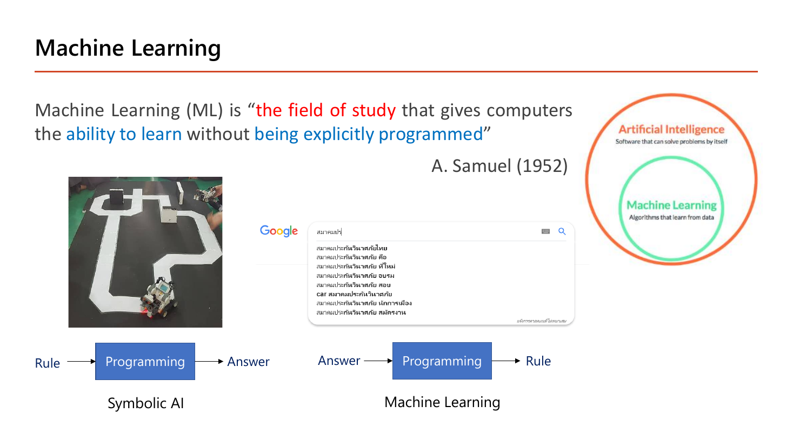
นิยามที่ต้องท่องได้คำต่อคำคือของ A. Samuel (1952): Machine Learning (ML) is "the field of study that gives computers the ability to learn without being explicitly programmed". แปลทีละชิ้น: the field of study = ML เป็น "สาขาวิชา" ไม่ใช่โปรแกรมหรือเครื่องมือชิ้นหนึ่ง (ข้อสอบชอบสลับเป็น "a computer program" หรือ "a type of hardware"); ability to learn = ความสามารถที่จะเรียนรู้ ซึ่งวัดจากการที่ผลลัพธ์ดีขึ้นเมื่อได้ข้อมูลมากขึ้น; without being explicitly programmed = โดยไม่ต้องเขียนกฎให้ตรง ๆ ทีละข้อ.
ส่วนที่ทำให้เห็นภาพที่สุดคือสองแผนภาพล่างของสไลด์ ซึ่งสลับตำแหน่งของ "Rule" กับ "Answer" กัน: ฝั่ง Symbolic AI เดินจาก Rule → Programming → Answer; ฝั่ง Machine Learning เดินจาก Answer → Programming → Rule. ลองแทนด้วยตัวอย่าง Google Suggest บนสไลด์: แบบ Symbolic AI โปรแกรมเมอร์ต้องเขียนกฎเองว่า "ถ้าผู้ใช้พิมพ์ 'สมาคมประ' ให้เดาว่า…" ซึ่งต้องเขียนเป็นล้านกฎและตกยุคทันทีที่คำค้นใหม่เกิดขึ้น; แบบ Machine Learning เราป้อน คำตอบ (ประวัติการค้นจริงของผู้ใช้หลายพันล้านครั้ง) ให้เครื่อง แล้วเครื่องสรุป กฎ ออกมาเอง. นี่คือสาระของคำว่า "ไม่ต้อง explicitly programmed" — เราไม่ได้เลิกเขียนโปรแกรม แต่เปลี่ยนสิ่งที่ป้อนเข้าไปจากกฎเป็นคำตอบ. ภาพวงกลมซ้อนมุมขวาย้ำว่า Machine Learning เป็น วงใน ของ Artificial Intelligence: AI = ซอฟต์แวร์ที่แก้ปัญหาได้เอง, ML = อัลกอริทึมที่เรียนจากข้อมูล ซึ่งเป็นวิธีหนึ่งของ AI เท่านั้น.
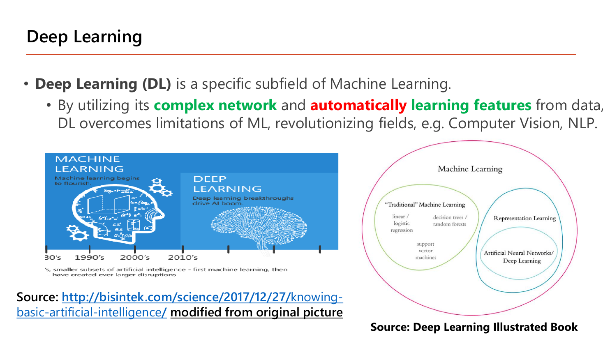
ประโยคหลักของหน้านี้คือ "Deep Learning (DL) is a specific subfield of Machine Learning" และเหตุผลสองข้อที่ DL เอาชนะ ML ดั้งเดิมได้ก็คือสองวลีที่ถูกทำสี: complex network และ automatically learning features from data. แผนภาพวงซ้อนด้านขวาไล่ลำดับได้ว่า Machine Learning ⊃ {"Traditional" ML = linear/logistic regression, decision trees, random forests, SVM} ∪ {Representation Learning ⊃ ANN / Deep Learning}. อ่านว่า: linear regression ที่เรากำลังจะเรียนในหัวข้อ 2 อยู่ในกล่อง "traditional" ส่วน deep learning อยู่ในกล่อง representation learning ซึ่งซ้อนอยู่อีกชั้นหนึ่ง ทั้งคู่เป็น ML เหมือนกัน. ความต่างไม่ใช่ "DL ฉลาดกว่า" แต่คือ traditional ML ต้องให้มนุษย์บอกว่าจะใช้ feature อะไร (เช่นบอกว่า "ดูขนาดบ้านกับจำนวนห้องนอน") ส่วน DL หา feature ที่ควรใช้เองจากข้อมูลดิบ.
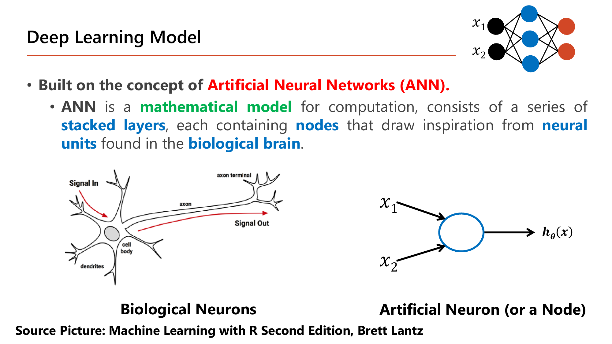
หน้านี้ให้นิยามของสิ่งที่ Lesson 2 จะขยายเต็ม ๆ: Deep Learning สร้างบนแนวคิด Artificial Neural Networks (ANN). โดย ANN คือ mathematical model สำหรับการคำนวณ ประกอบด้วย stacked layers ที่แต่ละชั้นบรรจุ nodes ซึ่งได้แรงบันดาลใจจาก neural units ใน biological brain. คำว่า "mathematical model" สำคัญมากและเป็นกับดักข้อสอบข้อแรก ๆ: ANN ไม่ใช่ การจำลองสมองจริง มันแค่ยืมรูปทรงมา — เซลล์ประสาทจริงรับสัญญาณเข้าทาง dendrite แล้วส่งออกทาง axon ส่วน node เทียมรับตัวเลข \(x_1, x_2\) เข้ามา คูณด้วยน้ำหนัก บวกกัน แล้วปล่อยตัวเลขเดียวออกไปเป็น \(h_\theta(x)\). ทั้งหมดที่เกิดขึ้นในวงกลมสีฟ้าวงนั้นคือ \(h_\theta(x)=\theta_0+\theta_1x_1+\theta_2x_2\) แล้วส่งผ่านฟังก์ชันบีบค่า ซึ่งก็คือ logistic regression ในหัวข้อ 5 ของบทนี้เป๊ะ ๆ. นี่คือเหตุผลที่บทที่ 1 ต้องแน่นก่อน: 1 node = 1 logistic regression.
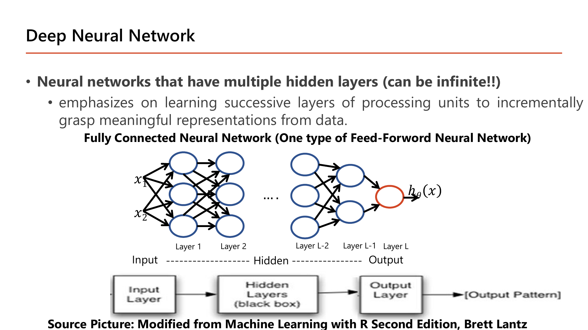
คำว่า "Deep" ในชื่อวิชาถูกนิยามตรงนี้: Neural networks that have multiple hidden layers (can be infinite!!) และจุดเน้นคือ "learning successive layers of processing units to incrementally grasp meaningful representations from data" — เรียนรู้ทีละชั้นเพื่อ ค่อย ๆ ได้ตัวแทนข้อมูลที่มีความหมายขึ้น. อ่านแผนภาพตามชื่อชั้นที่สไลด์กำกับไว้: \(x_1, x_2\) เข้า Layer 1 → Layer 2 → … → Layer L−2 → Layer L−1 → Layer L ที่มี node เดียวให้ค่า \(h_\theta(x)\) ออกมา โดยชั้นแรกสุดเรียก Input ชั้นสุดท้ายเรียก Output และทุกชั้นตรงกลางเรียก Hidden. คำว่า Fully Connected หมายถึงทุก node ในชั้นหนึ่งต่อกับทุก node ในชั้นถัดไปครบทุกเส้น และ Feed-Forward หมายถึงสัญญาณไหลไปข้างหน้าทางเดียว ไม่วนย้อนกลับ. กล่องล่างที่เขียนว่า Hidden Layers (black box) คือที่มาของข้อจำกัดเรื่องการตีความในหน้า 19: เรารู้ว่า input อะไรเข้าและ output อะไรออก แต่บอกไม่ได้ง่าย ๆ ว่าชั้นกลางคิดอะไรอยู่.
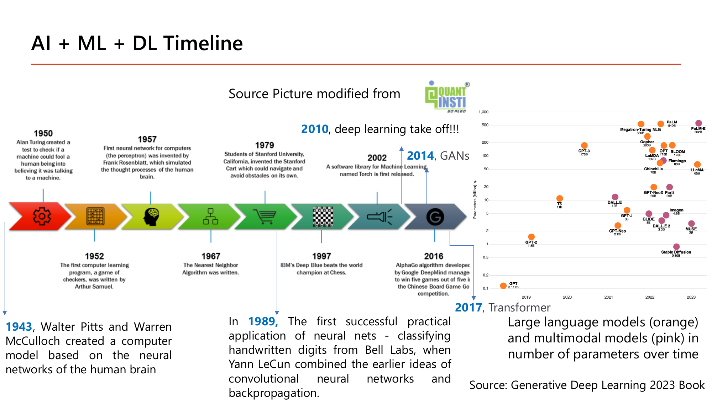
ปีที่อาจารย์ทำสีไว้มีห้าปี และแต่ละปีมีเหตุการณ์เจาะจงที่ควรจำคู่กัน: 1943 Walter Pitts และ Warren McCulloch สร้างแบบจำลองคอมพิวเตอร์จากโครงข่ายประสาทของสมองมนุษย์ (จุดกำเนิดของ "artificial neuron"); 1989, Yann LeCun รวมแนวคิด convolutional neural network เข้ากับ backpropagation จนอ่านตัวเลขลายมือได้สำเร็จที่ Bell Labs — นับเป็น "the first successful practical application of neural nets"; 2010 deep learning เริ่มพุ่ง; 2014 GANs; 2017 Transformer. บทเรียนที่ใช้สอบได้คือ ช่องว่าง 46 ปีระหว่าง 1943 กับ 1989 และอีก 21 ปีจนถึง 2010: ทฤษฎีมีมานานแล้ว สิ่งที่มาทีหลังคือข้อมูลกับพลังประมวลผล (หน้า 14). กราฟจุดด้านขวาเสริมด้วยตัวเลขจริงของขนาดโมเดล — GPT รุ่นแรกมีราว 0.117 พันล้านพารามิเตอร์ ขณะที่ PaLM ที่จุดปี 2022 มี 540 พันล้าน คือต่างกันราว 4,600 เท่าภายในไม่กี่ปี ซึ่งเป็นไปได้เพราะหลัง Transformer (2017) การเพิ่มขนาดโมเดลให้ผลตอบแทนคุ้มค่าต่อเนื่อง. ตัวเลขชุดนี้ก็คือ "ขนาดของ \(\theta\)" ที่เรากำลังจะเริ่มนับจาก 2 ตัวในหัวข้อ 2.
สไลด์หน้า 12–14 ตอบคำถามว่าทำไม DL ถึงชนะ และหน้า 19 ตอบว่าราคาที่ต้องจ่ายคืออะไร. อ่านสองฝั่งนี้คู่กันเสมอ เพราะข้อสอบมักถามแบบ "ข้อใดไม่ใช่ข้อดี/ข้อจำกัดของ DL".
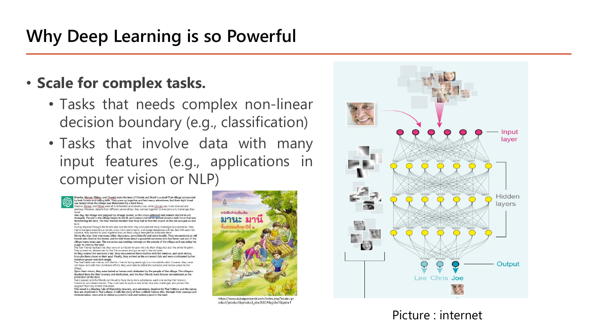
เหตุผลข้อแรกคือ Scale for complex tasks ซึ่งแตกเป็นสองกรณี. กรณีแรก "tasks that need complex non-linear decision boundary (e.g., classification)" — ถ้าเส้นแบ่งระหว่างสองคลาสไม่ใช่เส้นตรง โมเดลเชิงเส้นตัวเดียวจะทำไม่ได้ ต้องซ้อนหลายชั้นเพื่อดัดเส้นให้โค้ง (เราจะเห็นตัวอย่างเส้นโค้งจริงในหน้า 38 และ 43). กรณีที่สอง "tasks that involve data with many input features (e.g., applications in computer vision or NLP)" — ลองนับจริง: ภาพใบหน้าขาวดำขนาด 100×100 พิกเซล มี \(100 \times 100 = 10{,}000\) ตัวเลขต่อภาพ ถ้าเป็นภาพสี RGB จะเป็น \(10{,}000 \times 3 = 30{,}000\) feature. โมเดลอย่าง linear regression ที่มี \(\theta\) ตัวละ feature จะต้องให้มนุษย์ตัดสินใจว่าจะย่อ 30,000 ตัวเลขนี้เป็น feature อะไรก่อน ขณะที่โครงข่ายลึกรับเข้าไปดิบ ๆ แล้วให้ชั้นต้น ๆ หา "ขอบ" ชั้นถัดไปหา "ส่วนของใบหน้า" ชั้นลึกสุดจึงตอบว่าเป็น Lee, Chris หรือ Joe ตามที่สไลด์กำกับชื่อ output ไว้.
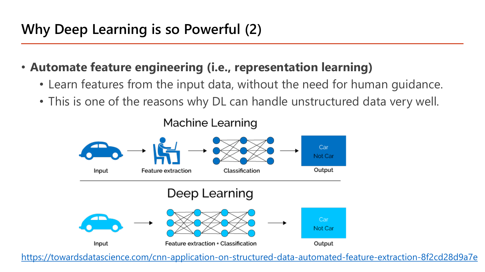
เหตุผลข้อที่สองคือ Automate feature engineering (i.e., representation learning): "learn features from the input data, without the need for human guidance" และ "this is one of the reasons why DL can handle unstructured data very well". สองเส้นทางที่สไลด์เทียบกันใช้โจทย์เดียวกันคือดูภาพรถแล้วตอบ Car / Not Car. เส้นทาง Machine Learning มีสามกล่อง — Input → Feature extraction ที่มีคนนั่งทำ → Classification; เส้นทาง Deep Learning เหลือสองกล่อง — Input → Feature extraction + Classification รวมอยู่ในโครงข่ายเดียว. ความหมายเชิงปฏิบัติ: ในแบบแรกถ้าใครออกแบบ feature ว่า "นับจำนวนวงกลม (ล้อ)" แล้วเจอรถที่ถ่ายด้านหน้าซึ่งมองไม่เห็นล้อ โมเดลก็พัง และต้องให้คนกลับไปออกแบบ feature ใหม่; ในแบบที่สอง การเลือก feature กลายเป็นส่วนหนึ่งของค่า \(\theta\) ที่ถูกฝึกไปพร้อมกัน จึงปรับตัวเองได้จากข้อมูล. คำว่า unstructured data หมายถึงข้อมูลที่ไม่ได้อยู่ในตารางแถว-คอลัมน์ เช่น ภาพ เสียง ข้อความ — เป็นข้อมูลที่ "ไม่มีคอลัมน์สำเร็จรูปให้หยิบ" จึงได้ประโยชน์จากการหา feature อัตโนมัติมากที่สุด.
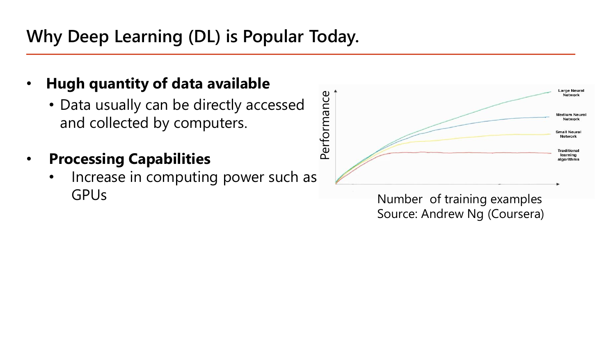
หน้านี้ตอบคำถามว่า "ถ้าทฤษฎีมีตั้งแต่ 1943 ทำไมเพิ่งดังปี 2010" ด้วยสองเหตุผล: Hugh quantity of data available (สไลด์สะกดว่า Hugh ซึ่งน่าจะหมายถึง huge) เพราะ "data usually can be directly accessed and collected by computers" และ Processing Capabilities จาก "increase in computing power such as GPUs". กราฟของ Andrew Ng ด้านขวาคือหัวใจ: แกนนอนคือจำนวนตัวอย่างฝึก แกนตั้งคือ performance. เส้นล่างสุด (traditional learning algorithms) ไต่ขึ้นตอนแรกแล้ว แบนราบ — ข้อมูลเพิ่มอีกก็ไม่ดีขึ้น เพราะความจุของโมเดลตันแล้ว; เส้น small → medium → large neural network ยัง ไต่ขึ้นเรื่อย ๆ และยิ่งโครงข่ายใหญ่ยิ่งได้ประโยชน์จากข้อมูลมาก. ข้อสรุปที่ใช้สอบได้: โครงข่ายใหญ่ ไม่ได้ดีกว่าเสมอ — ที่ข้อมูลน้อย ๆ ด้านซ้ายของกราฟ เส้นทั้งสี่แทบทับกัน ข้อได้เปรียบจะโผล่ก็ต่อเมื่อข้อมูลมากพอ. นี่คือเหตุผลเดียวกับที่หน้า 58 จะบอกว่า "เพิ่มข้อมูลช่วย high variance".
หน้า 15 รวบรวม Successful Applications ไว้ 20 งานจากบทความ mygreatlearning เช่น self-driving cars, visual recognition, fraud detection, natural language processing, automatic machine translation, colourisation of black and white images, photo descriptions ไปจนถึง deep dreaming — ประเด็นคือความกว้างของงาน ไม่ใช่รายชื่อที่ต้องท่อง. หน้า 16 และหน้า 17 เป็นผลงานวิจัยของอาจารย์เองซึ่งบอกใบ้ว่าหัวข้อปลายเทอมหน้าตาอย่างไร: ฝั่ง Computer Vision มี GANs in Healthcare (Singkorapoom & Phoomvuthisarn, 2023 — ศึกษาความทนทานของ pre-trained model ต่อการโจมตีแบบ poisoning ด้วยภาพเอกซเรย์ปอดที่ GAN สังเคราะห์ขึ้นให้ดูเหมือน Pneumonia/Normal) และ Virtual Try-on using Diffusion (Kiattithapanayong & Phoomvuthisarn, 2025 — เทียบผลลองเสื้อเสมือนระหว่าง LADI-VITON, VITON-HD, HR-VITON กับวิธีที่เสนอ); ฝั่ง NLP มี LLM tutor (RAG) ที่ตอบคำถามเชิงภาพว่า "What does the Transformer diagram show?" พร้อมแสดงเวลาในการค้นคืน 1.82 วินาทีและคะแนนความคล้ายของแหล่งอ้างอิง 0.5127 และ Multi-Agent Fact Verification for E-Commerce Q/A ที่ตัดสินคำตอบใน AnswerFact ว่า Supported ด้วยคะแนนรวม 1.00. ทั้งสี่งานนี้ใช้เทคนิคจาก Part 3–5 ของคอร์ส (CNN, GAN, Diffusion, Transformer, RAG) ซึ่งทุกตัวยังเรียนด้วย gradient descent + cost function ชุดเดียวกับบทนี้.
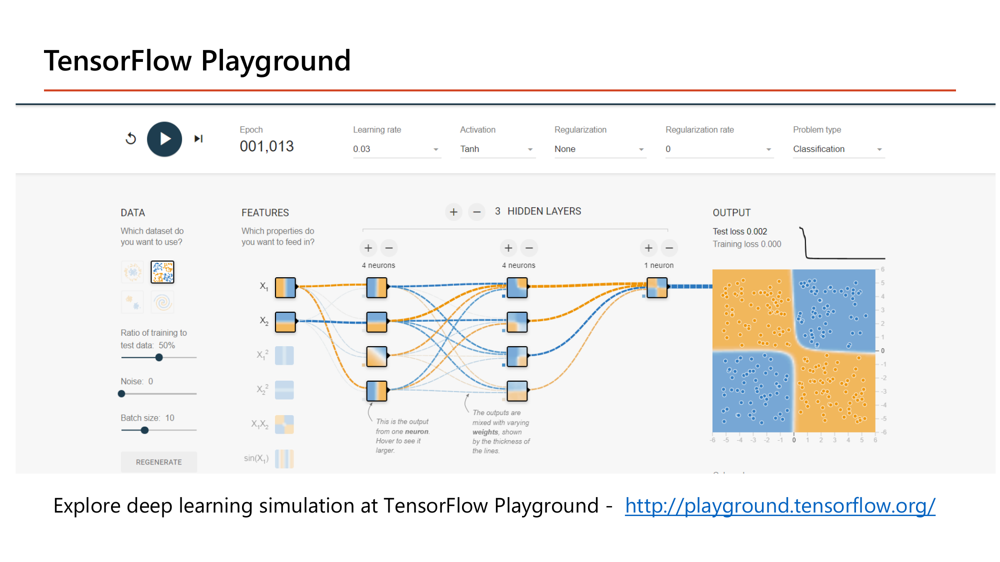
เครื่องมือนี้คือห้องทดลองที่เล่นได้จริงและตรงกับทุกคำที่บทเรียนนี้ใช้: ค่าบนหน้าจอในสไลด์คือ learning rate 0.03 (คือ \(\alpha\) ในหัวข้อ 3), activation Tanh (Lesson 2), regularization None และ regularization rate 0 (คือ \(\lambda\) ในหัวข้อ 11), hidden layers 3 ชั้นขนาด 4-4-1 node และผลลัพธ์คือ training loss 0.000 กับ test loss 0.002 หลังผ่านไป 1,013 epoch. ชุดข้อมูลที่เลือกเป็นแบบสี่ช่องสลับสี ซึ่งเส้นตรงเส้นเดียว แบ่งไม่ได้ — ต้องมี hidden layer ถึงจะได้เส้นแบ่งรูปกากบาทแบบนั้น จึงเป็นภาพสาธิตของประโยค "complex non-linear decision boundary" ในหน้า 12 โดยตรง. ลองปรับ learning rate เป็น 3 แล้วดู loss กระโดดขึ้น จะเห็นปรากฏการณ์เดียวกับตัวอย่างคำนวณ \(\alpha\) ใหญ่เกินไปในหัวข้อ 3.
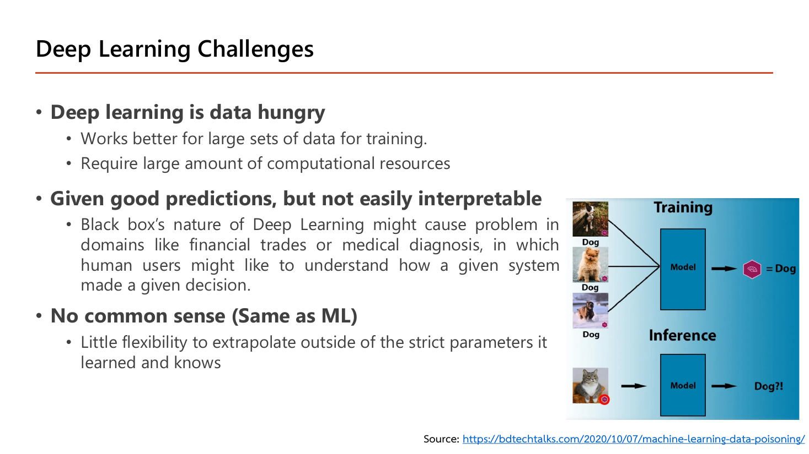
ข้อจำกัดสามข้อที่ต้องตอบได้: (1) Deep learning is data hungry — "works better for large sets of data for training" และ "require large amount of computational resources" คือข้อได้เปรียบในหน้า 14 พลิกกลับด้าน ถ้ามีข้อมูลไม่กี่ร้อยแถว โมเดลเล็กแบบ logistic regression มักชนะ; (2) Given good predictions, but not easily interpretable — "black box's nature of Deep Learning might cause problem in domains like financial trades or medical diagnosis, in which human users might like to understand how a given system made a given decision" คือทำนายแม่นแต่บอกเหตุผลไม่ได้ ซึ่งเป็นปัญหาในงานที่ต้องอธิบายให้ลูกค้าหรือแพทย์ฟัง; (3) No common sense (Same as ML) — "little flexibility to extrapolate outside of the strict parameters it learned and knows". ตัวอย่างในสไลด์เล่าเรื่องนี้ชัด: เทรนด้วยภาพสุนัขสามภาพติดป้าย Dog แล้วพอ inference ป้อนภาพ แมว เข้าไป โมเดลก็ยังตอบว่า "Dog?!" เพราะมันไม่เคยเห็นคลาสอื่นและไม่มีสามัญสำนึกว่าสิ่งที่เห็นไม่ใช่สุนัข. กับดักข้อสอบคือสับสนระหว่าง "no common sense" (เดาเลยขอบเขตข้อมูลที่เคยเห็นไม่ได้) กับ "overfitting" (จำข้อมูลฝึกมากไปจนใช้กับข้อมูลใหม่ไม่ได้ — คนละเรื่อง ดูหัวข้อ 10).
ถึงตรงนี้เรารู้แล้วว่า ML คือการให้เครื่องสรุปกฎจากคำตอบ แต่ "สรุปกฎ" เกิดขึ้นจริงอย่างไร? สไลด์หน้า 20–23 วางกระบวนการทั้งหมดไว้เป็นสามขั้นตอนซึ่งเป็นโครงของหัวข้อ 2 ถึง 3 ทั้งดุ้น. หน้า 20 ทวนนิยามของ Samuel ซ้ำอีกรอบ (เหมือนหน้า 7 ทุกตัวอักษร) แล้วหน้า 21 จึงลงรายละเอียดว่าการเรียนรู้แปลว่าอะไร.
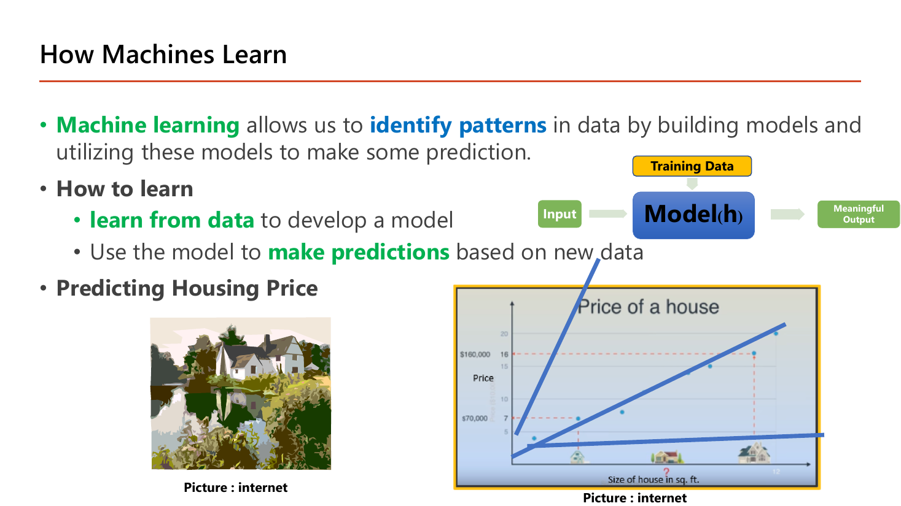
Machine learning ทำให้เรา identify patterns ในข้อมูลได้โดยการสร้างโมเดลแล้วใช้โมเดลนั้นทำนาย และคำว่า "เรียนรู้" ถูกแตกเป็นสองจังหวะคือ learn from data เพื่อสร้างโมเดล แล้วจึงใช้โมเดลนั้น make predictions กับข้อมูลใหม่. แผนภาพในสไลด์จึงมีสามกล่องเรียงกัน: Training Data ป้อนลงมาที่กล่อง Model (h) และเมื่อมี Input เข้ามาก็ได้ Meaningful Output ออกไป. สังเกตว่า Training Data เข้าทางบนของกล่อง ส่วน Input เข้าทางซ้าย — สองเส้นนี้คนละหน้าที่กัน: training data ใช้ ครั้งเดียวตอนสร้าง \(h\) ส่วน input คือข้อมูลใหม่ที่เอามาถามโมเดลหลังสร้างเสร็จ. ตัวอย่างที่ใช้ต่อทั้งบทคือ Predicting Housing Price ซึ่งกราฟในสไลด์ลากเส้นตรงหลายเส้นผ่านกลุ่มจุดเดียวกัน — โดยจุดข้อมูลบอกว่าบ้านที่ราคา $70,000 กับ $160,000 ต่างกันที่ขนาด และคำถามคือ "เส้นไหนถูกที่สุด". คำว่า "ถูกที่สุด" นี่แหละคือสิ่งที่ต้องนิยามด้วยตัวเลข และตัวเลขนั้นคือ cost function ในหัวข้อ 3.
คำสองคำนี้ถูกใช้สลับกันบ่อยจนสับสน ให้แยกแบบนี้:
เปรียบเทียบ: โมเดลคือ "สูตรทำต้มยำ" (มีขั้นตอนตายตัว) พารามิเตอร์คือ "ใส่พริกกี่เม็ด มะนาวกี่ช้อน" ซึ่งปรับได้จนอร่อย. เปลี่ยนพารามิเตอร์ = ปรับรส; เปลี่ยนโมเดล = เปลี่ยนไปทำแกงเขียวหวานแทน.
ตัวเลขชุดที่สามที่จะเจอในหน้า 59 คือ hyperparameter เช่น \(\alpha\) — เป็นตัวเลขที่ เราตั้งเอง ก่อนเริ่มฝึก และเครื่องเรียนรู้มันเองไม่ได้.
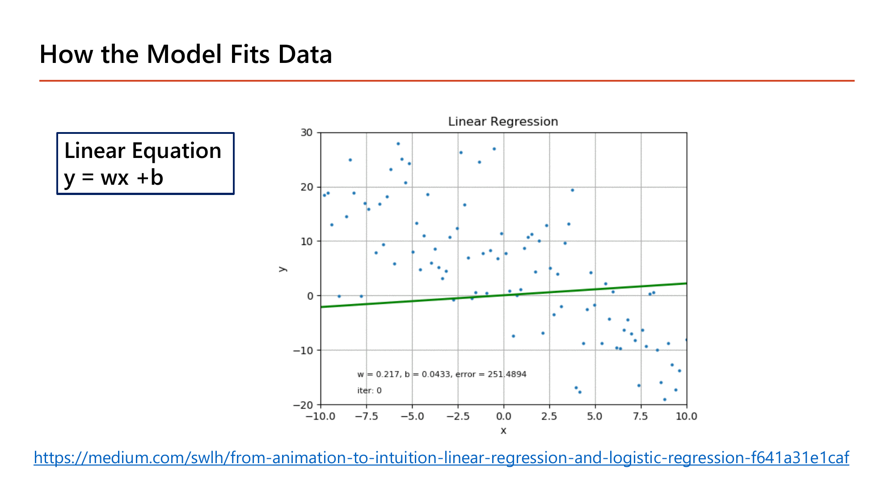
หน้านี้แนะนำสัญกรณ์อีกชุดที่จะเจอตอนเขียนโค้ด Keras ใน Lesson 2: Linear Equation \(y = wx + b\) โดย \(w\) คือ weight (เท่ากับ \(\theta_1\)) และ \(b\) คือ bias (เท่ากับ \(\theta_0\)) — คนละชื่อ สิ่งเดียวกัน. ตัวเลขที่พิมพ์ติดอยู่บนกราฟคือสถานะตอนเริ่มต้นจริง ๆ ของการฝึก: \(w = 0.217,\ b = 0.0433,\ \text{error} = 251.4894\) ที่ \(\text{iter} = 0\). อ่านได้ว่าเส้นเริ่มต้นเกือบแบนราบ (ความชัน 0.217) ทั้งที่กลุ่มจุดจริงลาดลงจากซ้ายบนไปขวาล่าง จึงพลาดไปมาก error จึงสูงถึง 251.49. ตัวเลข error ตัวนี้แหละคือ \(J(\theta)\) และงานที่เหลือทั้งบทคือ "ทำอย่างไรให้ 251.49 ลดลง".
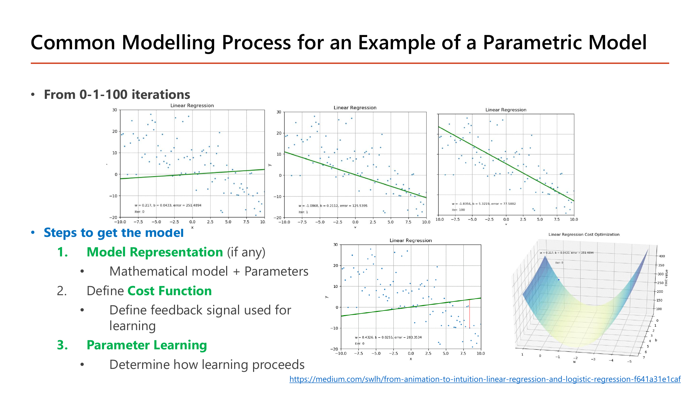
ภาพสี่กราฟบนสไลด์คือเรื่องเดียวกันเล่าด้วยตัวเลขจริงตั้งแต่ From 0-1-100 iterations: รอบที่ 0 ได้ \(w=0.217,\ b=0.0433,\ \text{error}=251.4894\); รอบที่ 1 ได้ \(w=-1.0868,\ b=0.2112,\ \text{error}=125.5395\); พอถึงรอบที่ 100 ได้ \(w=-1.8056,\ b=5.3219,\ \text{error}=77.5002\). ลองอ่านเป็นเรื่องเล่า: ความชันถูกพลิกจากบวกเป็นลบตั้งแต่รอบแรก (เพราะข้อมูลลาดลง) และ error หล่นครึ่งหนึ่งทันที (251 → 126) จากนั้นการปรับก็ค่อย ๆ ละเอียดขึ้นและ error ลดช้าลง (126 → 77.5 ใช้ไปอีก 99 รอบ) — นี่คือพฤติกรรมมาตรฐานของ gradient descent ที่เราจะคำนวณมือในหัวข้อ 3 คือ "ก้าวใหญ่ตอนไกล ก้าวเล็กตอนใกล้".
ส่วนที่ต้องท่องคือสามขั้นตอนที่อาจารย์ทำสีไว้ภายใต้หัวข้อ Steps to get the model:
คำว่า parametric model ในชื่อสไลด์หมายถึงโมเดลที่มีจำนวนพารามิเตอร์คงที่ ไม่โตตามจำนวนข้อมูล — linear regression, logistic regression และ neural network เป็นแบบนี้ทั้งหมด ต่างจาก k-nearest neighbour ที่ต้องเก็บข้อมูลทุกแถวไว้. และ "(if any)" ที่ต่อท้ายขั้นที่ 1 เตือนว่าบางอัลกอริทึม เช่น k-means ในหัวข้อ 12 ไม่มีสูตรพารามิเตอร์ให้เขียนแบบนี้.
ก่อนจะเลือกสูตร ต้องรู้ก่อนว่าโจทย์เป็นประเภทไหน เพราะประเภทของโจทย์เป็นตัวกำหนดทั้ง cost function และตัววัดผล. สไลด์หน้า 24 แบ่งด้วยคำถามเดียวคือ "มีเฉลยให้หรือไม่".
ตารางสามชุดบนสไลด์ใช้ข้อมูลบ้านชุดเดียวกันแต่เปลี่ยนคอลัมน์คำตอบ ซึ่งอธิบายความต่างได้ดีกว่าคำนิยาม. ชุดแรก: Size = 100, 200, 300 คู่กับ House Price = 1,000,000 / 2,000,000 / ??????? โดยมีข้อความ Correct Answers given กำกับ — คำตอบที่ต้องเดาคือ ตัวเลข จึงเป็น Regression problems ที่ทำนายผลลัพธ์แบบ continuous (ราคาจะเป็น 2,750,431 บาทก็ได้ ไม่ต้องลงตัว). ชุดที่สอง: Size 100/200/300 กับ Width 30/10/100 คู่กับคอลัมน์ Sale = Available / Sold / ????? ซึ่งก็มี Correct Answers given เหมือนกัน แต่คำตอบเป็น ป้ายชื่อ จึงเป็น Classification problems ที่ทำนายผลลัพธ์แบบ discrete (มีได้แค่ Sold กับ Available ไม่มี "ครึ่ง Sold"). ชุดที่สาม: มีแค่ Size กับ Width ไม่มีคอลัมน์คำตอบเลย กำกับว่า No Correct Answers given — นี่คือ unsupervised learning ที่ได้แต่จัดกลุ่มจุดที่คล้ายกัน (ภาพขวาสุดวงกลุ่มจุดเป็นสองก้อน) ซึ่งคือ k-means ในหัวข้อ 12.
สองคำที่สไลด์ใช้แยกบทบาทของ \(h\) ต้องจำให้แม่น: supervised learning ให้ \(h\) เป็น predictive model (ทำนายค่าที่ยังไม่รู้) ส่วน unsupervised learning ให้ \(h\) เป็น descriptive model (บรรยายโครงสร้างของข้อมูลที่มี ไม่ได้ทำนายอะไร). กล่องมุมล่างซ้ายยังระบุ Other Learning types อีกสองแบบที่ไม่ได้ลงลึกในวิชานี้คือ Semi-supervised Learning (มีเฉลยบางส่วน เช่น ติดป้ายไว้ 100 ภาพจาก 10,000 ภาพ) และ Reinforcement Learning (ไม่มีเฉลย แต่มีรางวัล/บทลงโทษป้อนกลับ เช่น เกม). สไลด์หน้า 25 ต่อจากนี้เป็นแผนผังรวมชื่ออัลกอริทึม ML ทั้งตระกูล (Clustering, Dimensionality Reduction, Regression, Regularization, Decision Tree, Bayesian, Neural Networks ฯลฯ) ซึ่งเป็นหน้าคั่นบทให้เห็นภาพกว้างว่าสิ่งที่เราเรียนสองสามตัวนี้อยู่ตรงไหนของแผนที่.
![Dataset slide: data represented as a matrix with rows and columns where columns are features and each row is an instance; features can be numeric such as bedrooms, bathrooms, lot_size, sqft_living, price, or categorical ordinal or nominal such as neighborhood, condition, year_built; notation x as input variable or input features, y as output variable or target feature, and training examples as pairs; with an eight-row example table whose columns are year_built, bedrooms, bathrooms, sqft_living, lot_size, neighborhood, condition and price](../assets/slides/dl1-p26-dataset-features-notation.png)
หน้านี้กำหนดสัญกรณ์ที่ใช้ยาวไปจนจบวิชา. ข้อมูลถูกจัดเป็น "a matrix with rows and columns" โดยคอลัมน์เรียกว่า feature และแต่ละแถวคือ instance หนึ่งตัวอย่าง. ดูจากตารางตัวอย่างบนสไลด์: แถวแรกคือบ้านที่ year_built = 2015, bedrooms = 3, bathrooms = 2, sqft_living = 1800, lot_size = 4000, neighborhood = Downtown, condition = Good, price = 450000; แถวที่สองเป็นบ้านปี 2012 ที่มี 4 ห้องนอน 3 ห้องน้ำ ราคา 620000. สไลด์แยก feature เป็นสองชนิด — Numeric ได้แก่ bedrooms, bathrooms, lot_size, sqft_living, price และ Categorical (Ordinal หรือ Nominal) ได้แก่ neighborhood, condition (ซึ่งเป็น ordinal เพราะ Fair < Good < Excellent เรียงลำดับได้) และ year_built ที่สไลด์หมายเหตุว่า "depends on your intention" — จะมองเป็นตัวเลข (บ้านใหม่กว่าแพงกว่า) หรือมองเป็นหมวดหมู่ (ยุคของการก่อสร้าง) ก็ได้ แล้วแต่ว่าจะให้โมเดลตีความอย่างไร.
สัญกรณ์ที่ทำสีไว้: \(x\) = input variable / input features / predictors / independent variable เขียนเป็นชุด \(x=\{x_1,x_2,\dots,x_n\}\); และ \(y\) = output variable / target feature / outcome / dependent variable เขียนเป็น \(y=\{y_1,y_2,\dots,y_n\}\). ที่ต้องระวังคือคำ สี่คำต่อหนึ่งความหมาย — ข้อสอบชอบใช้คำที่เราไม่คุ้น เช่น ถามถึง "independent variable" ซึ่งก็คือ \(x\) นั่นเอง. สุดท้ายคือรูปของชุดข้อมูลฝึก: Training examples = \(\{(x^{(1)},y^{(1)}),(x^{(2)},y^{(2)}),\dots,(x^{(m)},y^{(m)})\}\) โดย \(m\) = number of training examples. ต้องแยกให้ออกระหว่าง \(n\) (จำนวน feature = จำนวนคอลัมน์ = ความกว้าง) กับ \(m\) (จำนวนตัวอย่าง = จำนวนแถว = ความสูง) เพราะสูตร cost function หารด้วย \(m\) เสมอ ไม่ใช่ \(n\). ในตารางตัวอย่างนี้ ถ้านับ price เป็น \(y\) จะได้ \(n = 7\) feature และ \(m = 8\) แถว.
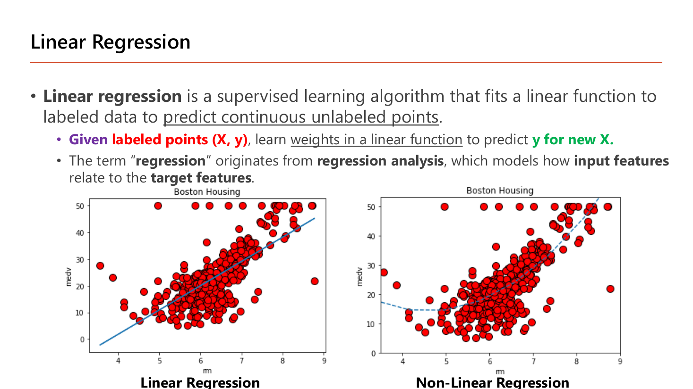
นิยามบนสไลด์: linear regression เป็น supervised learning algorithm ที่ "fits a linear function to labeled data to predict continuous unlabeled points" — สรุปเป็นประโยคเดียวคือ Given labeled points (X, y), learn weights in a linear function to predict y for new X.. อ่านทีละคำ: labeled points คือข้อมูลที่มีเฉลย, learn weights คือหาค่า \(\theta\), for new X คือใช้กับข้อมูลที่ไม่เคยเห็น. ที่มาของชื่อ "regression" มาจาก regression analysis ทางสถิติซึ่งศึกษาว่า input features สัมพันธ์กับ target features อย่างไร — ไม่ได้แปลว่า "ถอยหลัง" อย่างที่ชื่ออาจชวนเข้าใจผิด. กราฟสองอันในสไลด์ใช้ชุดข้อมูล Boston Housing เดียวกัน โดยแกนนอน \(rm\) คือจำนวนห้องเฉลี่ยต่อบ้าน (ราว 3.5–9) และแกนตั้ง \(medv\) คือราคากลางของบ้าน (0–50): ฝั่งซ้ายลากเส้นตรงเส้นเดียวผ่านกลุ่มจุด ฝั่งขวาลากเส้นโค้ง. เส้นโค้งแนบจุดได้ดีกว่าในช่วง \(rm < 5\) ที่ราคาลดแล้วเชิดขึ้น แต่ก็เสี่ยงจะไล่ตาม noise — ความตึงเครียดระหว่างสองเส้นนี้คือหัวข้อ 10 (bias vs variance) ทั้งหัวข้อ.
สมการเส้นตรงมีเลขสองตัวที่กำหนดทุกอย่าง:
สูตรหาความชันจากสองจุด \((x_A,y_A)\) และ \((x_B,y_B)\) คือ
$$\theta_1=\frac{\Delta y}{\Delta x}=\frac{y_B-y_A}{x_B-x_A}$$สัญลักษณ์ \(\Delta\) (เดลต้า) อ่านว่า "ผลต่าง" เฉย ๆ ไม่มีอะไรลึกลับ. ลองกับตัวเลขง่าย ๆ: จุด \((2,10)\) และ \((5,16)\) ⇒ \(\Delta y = 16-10 = 6\), \(\Delta x = 5-2 = 3\) ⇒ ความชัน \(= 6/3 = 2\) แปลว่า \(x\) ขยับขึ้น 1 แล้ว \(y\) ขยับขึ้น 2.
ระวัง: สไลด์หน้า 28 ใช้ตัวอักษร \(b\) แทนความชันในกล่องที่เขียน \(b=\Delta y/\Delta x\) และใช้ \(a\) แทนจุดตัดแกน (เขียนว่า \(a=0,\ b=1\)) ซึ่งสลับกับธรรมเนียม \(y=wx+b\) ในหน้า 22 ที่ \(b\) คือจุดตัดแกน. เวลาสอบให้ยึดตำแหน่งในสูตร ไม่ใช่ตัวอักษร: ตัวที่คูณอยู่กับ \(x\) คือความชันเสมอ.
Linear regression = ทำนายตัวเลข (เช่นราคา) ด้วยสมการเส้นตรง สไลด์หน้า 28 แยกเป็นสองกรณีที่ทำสีไว้ คือ Linear regression with one variable และ Linear regression with multiple variables. กรณีตัวแปรเดียวใช้ hypothesis
$$h_\theta(x) = \theta_0 + \theta_1 x$$\(\theta_0\) คือ "จุดตัดแกน y" (ค่าตอน \(x=0\)), \(\theta_1\) คือ "ความชัน" (x เพิ่ม 1 หน่วย y เพิ่มกี่หน่วย)
![Model Representation slide: linear regression with one variable asks how to represent the hypothesis function, showing h(x) = theta0 + theta1 x with labels slope and y-intercept, a line through (0,0) and (3,3) whose slope is computed as (3-0)/(3-0) = 1 giving h(x) = 0 + 1x = x, and linear regression with multiple variables showing a housing table with sizes 100, 200, 300, bedroom counts 3, 2, 3 and prices 1,000,000, 2,000,000, 3,000,000 together with the general form h(x) = sum of theta_i x_i where x_0 = 1](../assets/slides/dl1-p28-model-representation-slope-calc.png)
ทำไมต้องหาความชันก่อน? เพราะความชันบอก "รูปร่าง" ของเส้น ส่วนจุดตัดแกนแค่เลื่อนเส้นขึ้นลง
เส้นผ่านจุด \((0,0)\) แปลว่าตอน \(x=0\) ค่า \(y=0\) ⇒ \(\theta_0 = 0\) (ตรงกับที่สไลด์เขียนว่า \(a=0\))
สมการทำนายว่า \(y\) เท่ากับ \(x\) เป๊ะ เช่นถ้า \(x=5\) ⇒ ทำนาย \(y=5\) (ตรงกับจุดข้อมูลที่กระจายรอบเส้น \(y=x\) ในสไลด์)
หลายตัวแปร: เมื่อมี feature หลายตัว (ขนาดบ้าน \(x_1\), จำนวนห้องนอน \(x_2\)) แค่บวก term เพิ่ม โครงสร้างเดิมทุกประการ:
$$h_\theta(x) = \theta_0 + \theta_1 x_1 + \theta_2 x_2 + \dots + \theta_n x_n$$สไลด์ย่อรูปนี้ให้สั้นลงด้วยเคล็ดลับที่ใช้ตลอดวิชา คือกำหนดให้มี feature ปลอมตัวหนึ่งที่มีค่าเป็น 1 เสมอ:
$$h_\theta(x)=\sum_{i=0}^{n}\theta_i x_i \quad \text{where } x_0 = 1$$พอให้ \(x_0=1\) เทอม \(\theta_0 x_0\) ก็เท่ากับ \(\theta_0\) พอดี ทำให้เขียนรวมเป็นผลรวมก้อนเดียวได้ ไม่ต้องแยกเทอมแรกออกมา
เคล็ดนี้สำคัญมากเพราะใน Lesson 2 มันจะกลายเป็น bias unit ของแต่ละชั้นในโครงข่าย — node พิเศษที่ปล่อยค่า 1 ออกมาตลอดเวลา.
สามสมการ สามตัวไม่รู้ค่า — แก้ได้พอดี
ลบกันได้ \(\theta_2 = 0\) จึงได้ \(\theta_0 = 0\) ด้วย
\(h_\theta(x) = 10{,}000\,x_1\) — ราคาคือขนาดคูณหมื่นถ้วน และจำนวนห้องนอนไม่มีผลเลย (\(\theta_2=0\)). ตรวจกลับ: \(10{,}000\times200 = 2{,}000{,}000\) ✓. บทเรียนคือค่า \(\theta_j = 0\) เป็นวิธีที่โมเดลบอกว่า "feature นี้ไม่ช่วยอะไร" ซึ่งเป็นแนวคิดเดียวกับ regularization ในหัวข้อ 11 ที่บีบ \(\theta\) ของ feature ไร้ประโยชน์ให้เข้าใกล้ศูนย์.
อ่านค่า \(\theta\) เป็นภาษาคนได้ว่า "เริ่มที่ 50 แล้วบวก 0.1 ต่อทุกตารางฟุต บวกอีก 20 ต่อห้องนอนหนึ่งห้อง"
ค่าเฉลี่ย คือบวกทุกตัวแล้วหารด้วยจำนวนตัว: ข้อมูล 3, 7, 11 ⇒ \((3+7+11)/3 = 7\). สัญลักษณ์ \(\sum_{i=1}^{m}\) (ซิกมา) แปลว่า "บวกตั้งแต่ตัวที่ 1 ถึงตัวที่ \(m\)" เฉย ๆ ดังนั้น \(\frac{1}{m}\sum_{i=1}^{m} a_i\) ก็คือคำว่า "เฉลี่ย" เขียนด้วยสัญลักษณ์.
ทำไมต้องยกกำลังสอง — สมมติโมเดลทำนายพลาด 2 ตัวอย่าง: ตัวแรกทำนายเกินไป \(+5\) ตัวที่สองทำนายขาดไป \(-5\). ถ้าเฉลี่ยตรง ๆ จะได้ \((5 + (-5))/2 = 0\) ซึ่งแปลว่า "ไม่ผิดเลย" ทั้งที่พลาดทั้งสองตัว! พอยกกำลังสองก่อนจะได้ \((25+25)/2 = 25\) ซึ่งสะท้อนความจริง. กำลังสองทำสองหน้าที่พร้อมกันคือ ลบเครื่องหมาย และ ลงโทษความผิดพลาดใหญ่หนักกว่าตามสัดส่วน (ผิด 10 แพงกว่าผิด 5 ถึง 4 เท่า ไม่ใช่ 2 เท่า).
สไลด์หน้า 29 นิยามว่า "the methods to calculate errors of a model is a cost function \(J(\theta)\)" และตั้งเป้าว่า "Goal: Minimize cost function — choose \(\theta_0,\theta_1,\dots,\theta_n\) to minimize the sum of the squared errors". สูตรที่ใช้คือ Mean Square Error (MSE):
$$J(\theta) = \frac{1}{m}\sum_{i=1}^{m}\left(h_\theta(x^{(i)}) - y^{(i)}\right)^2$$ไล่ทุกตัวอย่าง: (ค่าทำนาย − ค่าจริง) ยกกำลังสอง แล้วเฉลี่ย — ยิ่งเส้นห่างจากจุดมาก ค่า J ยิ่งสูง
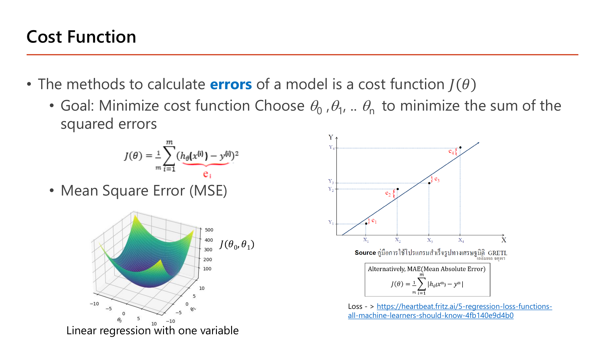
สไลด์วาดเส้นตรงผ่านจุด \(X_1, X_2, X_3, X_4\) แล้วลากเส้นประแนวตั้งจากแต่ละจุดมาชนเส้น พร้อมตั้งชื่อระยะนั้นว่า \(e_1, e_2, e_3, e_4\) — นั่นคือ \(h_\theta(x^{(i)})-y^{(i)}\) ของแต่ละตัวอย่าง หรือที่สไลด์กำกับใต้สูตรว่า \(e_i\). สิ่งที่ MSE ทำคือเอา \(e_i\) ทั้งสี่มายกกำลังสองแล้วเฉลี่ย. สไลด์ยังให้ทางเลือกอีกแบบไว้ในกรอบคือ MAE (Mean Absolute Error) \(J(\theta)=\frac{1}{m}\sum_{i=1}^{m}\left|h_\theta(x^{(i)})-y^{(i)}\right|\) ซึ่งใช้ค่าสัมบูรณ์แทนกำลังสอง. ความต่างที่ออกสอบได้: MAE ลงโทษความผิดพลาดทุกขนาดเป็นสัดส่วนตรง ๆ จึงทนต่อ outlier ได้ดีกว่า แต่ MSE หาอนุพันธ์ได้ราบรื่นทุกจุด (MAE มีจุดหักที่ศูนย์) จึงเข้ากับ gradient descent ได้ดีกว่า — เหตุผลนี้คือที่มาของการที่วิชานี้ใช้ MSE เป็นหลัก.
ส่วนรูปชามคือกราฟของ \(J(\theta_0,\theta_1)\) ที่สไลด์กำกับว่า "Linear regression with one variable": แต่ละจุดบนพื้นคือ "ลองค่า \(\theta_0,\theta_1\) ชุดหนึ่ง" ความสูงคือ cost ของชุดนั้น (แกนขวาของสไลด์ไล่จาก 100 ถึง 500) จุดต่ำสุดของชามคือ \(\theta\) ที่ดีที่สุด. ชามนี้ นูน (convex) มีจุดต่ำสุดจุดเดียว ไม่มีหลุมหลอก — ไม่ว่าเริ่มที่ไหน การไต่ลงจะเจอจุดเดียวกันเสมอ (ต่างจาก neural network ที่ Lesson 3 จะเจอ cost ไม่นูนอย่างในภาพซ้ายของหน้า 30 ที่มีทั้งเนินและหุบหลายลูก).
ทำนายตรงทุกจุด ⇒ ทุก \(e_i=0\) ⇒ cost เป็นศูนย์
ยิ่งห่างจาก \(\theta_1=1\) ค่า J ยิ่งสูง: \(4.667 \to 1.167 \to 0\) — นี่คือ "ชามหน้าตัด" ของ J เมื่อขยับ \(\theta_1\) อย่างเดียว. สังเกตว่าจุดที่ไกลกว่า (จุดที่ \(x=3\)) มีส่วนในค่า cost มากที่สุดเสมอ เพราะความผิดพลาดของมันถูกยกกำลังสอง
อนุพันธ์ = ความชันของกราฟ ณ จุดหนึ่ง คือคำตอบของคำถาม "ถ้าขยับ \(\theta\) ขึ้นนิดเดียว \(J\) จะเปลี่ยนไปเท่าไร".
ตัวอย่างคำนวณมือ: ให้ \(J(\theta)=\theta^2\) กฎง่าย ๆ คืออนุพันธ์ของ \(\theta^2\) เท่ากับ \(2\theta\). ที่ \(\theta=3\) ได้ความชัน \(2(3)=6\) (บวก = ทางขึ้น); ที่ \(\theta=-3\) ได้ \(-6\) (ลบ = ทางลง); ที่ \(\theta=0\) ได้ \(0\) (ก้นชาม). ลองตรวจด้วยตัวเลขจริง: \(J(3)=9\) และ \(J(3.01)=9.0601\) ⇒ เปลี่ยนไป \(0.0601\) ต่อการขยับ \(0.01\) ⇒ อัตราส่วน \(6.01\) ใกล้ 6 ตามที่สูตรบอก.
สัญลักษณ์ \(\partial\) (อ่านว่า "พาร์เชียล") ใช้แทน \(d\) เมื่อมีตัวแปรหลายตัว แปลว่า "ขยับตัวนี้ตัวเดียว ตัวอื่นตรึงไว้" — เช่น \(\partial J/\partial\theta_1\) คือขยับ \(\theta_1\) โดยยัง \(\theta_0\) ไว้เท่าเดิม.
![Parameter Learning slide: the Gradient Descent Algorithm starts with initial values of theta0 and theta1 and keeps updating them until reaching a minimum, written as repeat until convergence with theta_j assigned theta_j minus alpha times the partial derivative of J, and the expanded linear-regression form theta_j := theta_j - (alpha/m) times the sum over i of (h(x_i) - y_i) times x_j_i, plus a note on simultaneous update via temporary variables Tmp0 and Tmp1 and a rugged non-convex 3D cost surface with a descent path drawn on it](../assets/slides/dl1-p30-parameter-learning-gradient-descent.png)
สไลด์หน้านี้อธิบายอัลกอริทึมเป็นสองบรรทัด: "Gradient Descent Algorithm — start with some initial values of parameters, for example \(\theta_0,\theta_1\)" แล้ว "keep updating \(\theta_0,\theta_1\) until we end up at a minimum". เราไม่ต้องลองทุกค่า \(\theta\) — ใช้อัลกอริทึมที่ "ยืนตรงจุดหนึ่งบนชาม ดูความชัน แล้วก้าวลงเขา" ซ้ำไปเรื่อย ๆ:
$$\theta_j := \theta_j - \alpha\,\frac{\partial J(\theta_j)}{\partial \theta_j}\qquad(\alpha = \text{learning rate})$$ค่าใหม่ = ค่าเก่า − (ขนาดก้าว α) × (ความชันของ J ตรงจุดนี้)
เมื่อแทน \(J\) ของ linear regression ลงไปแล้วหาอนุพันธ์ จะได้รูปที่สไลด์ไฮไลต์กรอบเหลืองไว้ ซึ่งเป็นรูปที่ใช้คำนวณจริง:
$$\theta_j := \theta_j - \frac{\alpha}{m}\sum_{i=1}^{m}\left(h_\theta(x^{(i)}) - y^{(i)}\right)x_j^{(i)}$$ถ้า \(J=\frac1m\sum(h-y)^2\) (หน้า 29) แล้วหาอนุพันธ์จริง จะได้ตัวคูณ \(\frac{2}{m}\) ไม่ใช่ \(\frac1m\). สูตรกรอบเหลืองที่มี \(\frac{\alpha}{m}\) ตรงกับ \(J\) ที่หารด้วย \(2m\) (แบบที่ Andrew Ng ใช้ เพื่อให้เลข 2 จากการหาอนุพันธ์หักล้างกัน). ต่างกันแค่ตัวคูณ 2 ซึ่งดูดซับเข้าไปใน \(\alpha\) ได้ จุดต่ำสุดของ \(J\) ไม่เปลี่ยน. ข้างล่างเราคำนวณด้วย \(J\) ตามหน้า 29 จึงใช้ \(\frac2m\); ตอนสอบให้ทำตามสูตรที่โจทย์ให้มา.
สไลด์กำกับความหมายของแต่ละตัวไว้ท้ายหน้า: \(m\) = size of the training set, \(x^{(i)}\) = all values of input variable in a training set, \(y^{(i)}\) = all actual values of a training set. และมีเงื่อนไขสำคัญที่ต้องอ่านให้ครบคือ simultaneously update the parameters โดยสไลด์เขียนวิธีทำไว้ตรง ๆ ด้วยตัวแปรพัก:
$$\text{Tmp}_0 = \theta_0 - \alpha\frac{\partial J(\theta)}{\partial\theta_0},\quad \text{Tmp}_1 = \theta_1 - \alpha\frac{\partial J(\theta)}{\partial\theta_1}$$ $$\text{แล้วจึง}\quad \theta_0 := \text{Tmp}_0,\qquad \theta_1 := \text{Tmp}_1$$เหตุผลที่ต้องพักค่าไว้ก่อน: ถ้าอัปเดต \(\theta_0\) เสร็จแล้วค่อยคำนวณ \(\partial J/\partial\theta_1\) ความชันตัวที่สองจะถูกคำนวณจาก \(\theta_0\) ตัวใหม่ ซึ่งไม่ใช่ความชันของจุดที่เรายืนอยู่จริง กลายเป็นคนละอัลกอริทึมและอาจไม่ลู่เข้า. ข้อนี้เป็นกับดักข้อสอบยอดนิยมเพราะโค้ดที่เขียนผิดยังรันได้และดูเหมือนทำงานได้.
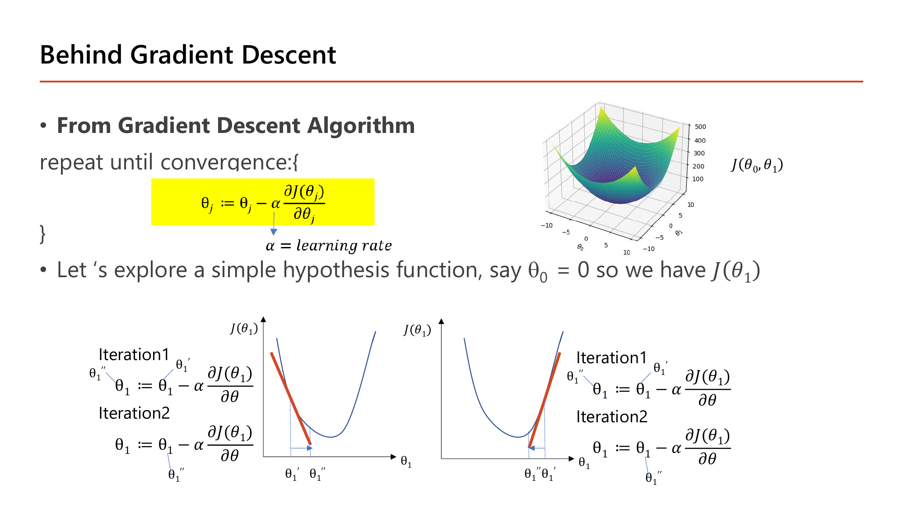
สไลด์ตั้งโจทย์ว่า "let's explore a simple hypothesis function, say \(\theta_0=0\) so we have \(J(\theta_1)\)" แล้ววาดพาราโบลาสองอันที่มีจุดเริ่มต้นคนละฝั่ง เพื่อไล่ให้ดูว่า Iteration1 พา \(\theta_1\) ไปที่ \(\theta_1'\) และ Iteration2 พาไปต่อที่ \(\theta_1''\) ซึ่งเข้าใกล้ก้นชามทั้งคู่ แม้ทิศการเคลื่อนที่ของสองภาพจะสวนทางกัน. ทำไมเครื่องหมายลบทำให้เดินเข้าหาจุดต่ำสุดได้ทั้งสองทาง — คำนวณเป็นกรณี ๆ:
| ยืนตรงไหนของชาม | ความชัน \(\partial J/\partial\theta\) | \(-\alpha \cdot(\text{ความชัน})\) | \(\theta\) เปลี่ยนไปทาง |
|---|---|---|---|
| ฝั่งซ้าย (ทางลง) | ลบ, เช่น \(-4\) | \(-\alpha(-4) = +4\alpha\) บวก | เพิ่มขึ้น → ไปทางขวา เข้าหาจุดต่ำสุด |
| ฝั่งขวา (ทางขึ้น) | บวก, เช่น \(+4\) | \(-\alpha(+4) = -4\alpha\) ลบ | ลดลง → ไปทางซ้าย เข้าหาจุดต่ำสุด |
| ที่จุดต่ำสุด | \(0\) | \(0\) | ไม่ขยับ (หยุดเอง) |
เครื่องหมายลบจึงทำหน้าที่ "กลับทิศให้เข้าหาจุดต่ำสุดเสมอ" — เหตุผลที่สูตรเป็น \(-\) ไม่ใช่ \(+\). ถ้าเปลี่ยนเป็นบวกจะกลายเป็น gradient ascent ซึ่งไต่ขึ้นยอดเขาแทน.
ความชันติดลบแรง แปลว่ายืนอยู่บนทางลงชัน ๆ ฝั่งซ้ายของชาม
cost ลดจาก 4.667 เหลือ 1.327
cost เหลือ 0.378
\(\theta_1 = 0.8483 \to 0.9191 \to 0.9568 \to 0.9770 \to \dots \to 1\) และ cost \(= 0.107 \to 0.031 \to 0.0087 \to \dots \to 0\)
ก้าวเล็กลงเรื่อย ๆ เพราะความชันเล็กลงเมื่อเข้าใกล้ก้นชาม (−9.33 → −4.98 → −2.65 → −1.42) จึงค่อย ๆ ลู่เข้า \(\theta_1=1\) (คำตอบที่ถูก) เอง โดยที่ \(\alpha\) ไม่เคยเปลี่ยนเลย — นี่คือคำตอบของคำถามบนสไลด์หน้า 32 ว่า "how does gradient descent converge with a fixed step size α?"
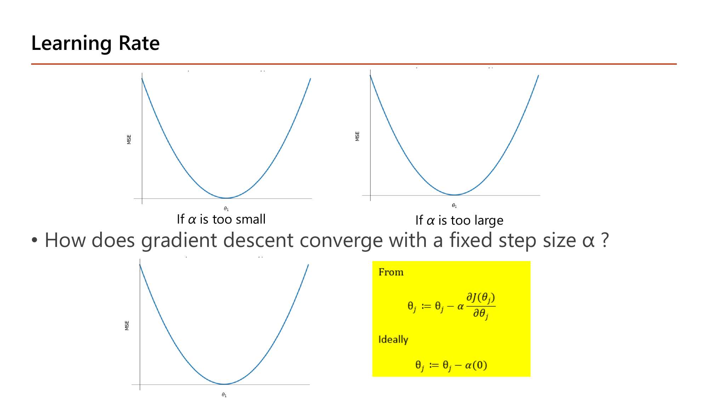
กล่องเหลืองมุมล่างขวาของสไลด์คือกุญแจของหน้านี้: เริ่มจาก \(\theta_j := \theta_j - \alpha\frac{\partial J(\theta_j)}{\partial\theta_j}\) แล้วเขียนว่า "Ideally \(\theta_j := \theta_j - \alpha(0)\)". อ่านว่า: พอถึงก้นชาม ความชันเป็น 0 สูตรจึงกลายเป็น \(\theta_j := \theta_j - 0\) คือ หยุดขยับเอง ไม่ต้องมีใครสั่งหยุด และระหว่างทางความชันก็หดลงเรื่อย ๆ ตามที่เราคำนวณไว้ข้างบน ทำให้ก้าวสั้นลงอัตโนมัติแม้ \(\alpha\) จะคงที่. ส่วนสองกราฟด้านบนเทียบกรณีสุดขั้วสองแบบ: "if \(\alpha\) is too small" ก้าวจิ๋วมากจนต้องวนนับหมื่นรอบ และ "if \(\alpha\) is too large" ก้าวข้ามก้นชามไปโผล่อีกฝั่งที่สูงกว่าเดิม.
ก้าวไกลจนข้ามจุดต่ำสุด (\(\theta_1=1\)) ไปฝั่งตรงข้าม; cost = 8.30 (สูงขึ้นจาก 4.67!)
ข้ามกลับอีกฝั่ง; cost = 14.75
ระยะห่างจากคำตอบ \(|\theta_1 - 1|\) เป็น \(1 \to 1.33 \to 1.78 \to 2.37\) ใหญ่ขึ้นทุกรอบ = diverge (ค่า J สูงขึ้นเรื่อย ๆ ไม่ลู่เข้า). ตัวคูณของระยะห่างต่อรอบคือ \(1-\alpha\cdot\frac{28}{3}\): ที่ \(\alpha=0.05\) ได้ \(0.53\) (หดลง ⇒ ลู่เข้า) แต่ที่ \(\alpha=0.25\) ได้ \(-1.33\) (ขยายและสลับข้าง ⇒ ระเบิด).
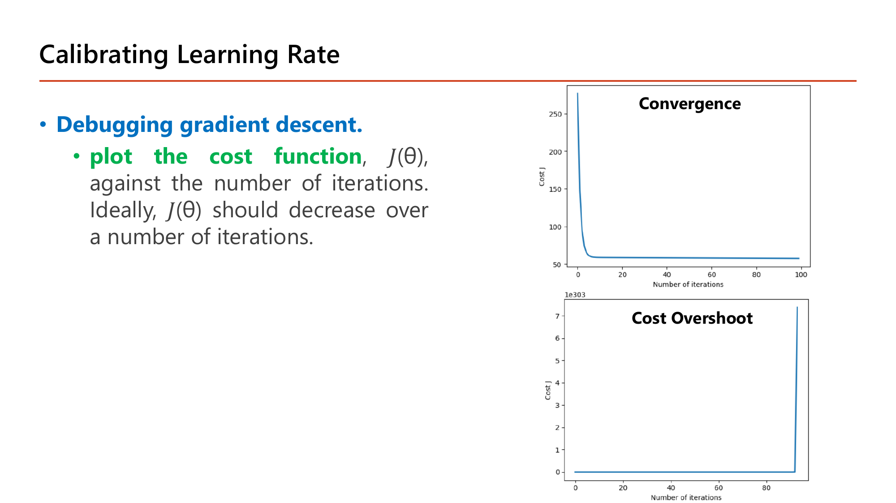
วิธีตรวจว่า \(\alpha\) เหมาะหรือไม่ อาจารย์ทำสีไว้ชัดเจนว่า Debugging gradient descent. ให้ plot the cost function \(J(\theta)\) เทียบกับจำนวน iteration โดย "ideally \(J(\theta)\) should decrease over a number of iterations". กราฟบนที่ชื่อ Convergence คือรูปที่ถูกต้อง: cost หล่นจากราว 270 ลงมาเหลือราว 57 ภายในสิบรอบแรกแล้วนิ่งยาวจนถึงรอบที่ 100 — แบนแล้วแปลว่าเจอก้นชามแล้ว เทรนต่อก็ไม่ได้อะไรเพิ่ม. กราฟล่างที่ชื่อ Cost Overshoot คือรูปที่ผิด: cost แนบศูนย์อยู่พักหนึ่งแล้ว พุ่งขึ้นถึงระดับ \(10^{303}\) ราวรอบที่ 90 ซึ่งเป็นเลขมหาศาลระดับใกล้ล้นชนิดข้อมูลของคอมพิวเตอร์ — อาการนี้คือการ diverge ที่เราคำนวณมือไปข้างบนเป๊ะ ๆ เพียงแต่เกิดกับข้อมูลจริง. ถ้าเห็นกราฟแบบล่าง วิธีแก้คือ ลด \(\alpha\) (เช่นจาก 0.25 เหลือ 0.05) ไม่ใช่เพิ่มจำนวนรอบ.
สรุปผลของ \(\alpha\) (สไลด์หน้า 32–33):
คำถามที่คนเรียนใหม่มักติดคือ "ในเมื่อหัวข้อ 2 เราแก้ระบบสมการสามแถวหา \(\theta\) ได้เป๊ะ ๆ แล้ว ทำไมต้องมานั่งไต่ทีละก้าวให้เสียเวลา?" สไลด์หน้า 37 ตอบไว้ครบสามเหตุผล.
เหตุผลแรก: "in situations where analytical solutions are feasible, it is recommended to solve for the model parameters analytically. However, in cases where analytical solutions are not possible, optimization algorithms such as gradient descent can be utilized." — อ่านให้ดี อาจารย์ แนะนำให้ใช้วิธีแก้สมการตรง ๆ ก่อน ถ้าทำได้ gradient descent เป็นแผนสำรองเมื่อแก้ตรง ๆ ไม่ได้ ซึ่งเป็นประโยคที่ข้อสอบชอบกลับด้าน. สำหรับ linear regression วิธีตรง ๆ นั้นมีชื่อว่า normal equation \(\theta=(X^\top X)^{-1}X^\top y\) และสไลด์ก็เตือนข้อจำกัดของมันไว้ว่า "this method may not always be feasible for very large datasets, as it involves inverting a matrix, which can be computationally expensive for big data" — การหาเมทริกซ์ผกผันของเมทริกซ์ขนาด \(n\times n\) มีต้นทุนราว \(n^3\) ดังนั้นถ้ามี 10,000 feature ต้นทุนจะอยู่ระดับ \(10^{12}\) ซึ่งช้าเกินรับไหว ขณะที่ gradient descent ต้นทุนต่อรอบโตแบบเชิงเส้นกับจำนวน feature เท่านั้น.
เหตุผลที่สอง: "in many cases, the complete graph may not be visible, particularly in high-dimensional datasets." — เรา มองไม่เห็นชามทั้งใบ. รูปชามสวย ๆ ในหน้า 29 วาดได้เพราะมีพารามิเตอร์แค่ 2 ตัว (\(\theta_0,\theta_1\)) จึงพล็อตเป็น 3 มิติได้; พอมี 3 พารามิเตอร์ก็ต้องใช้ 4 มิติซึ่งวาดไม่ได้แล้ว และโครงข่ายใน Lesson 4 มีพารามิเตอร์เป็นแสน. gradient descent จึงมีค่าตรงที่มัน ไม่ต้องเห็นภาพรวม — รู้แค่ความชันใต้เท้าตัวเองก็เดินลงได้ เหมือนคนเดินลงเขาในหมอกหนา.
เหตุผลที่สาม: "to compare possible set of parameters, machine learning can be employed, but this approach is limited by the computational resources available." — ถ้าจะลองทุกชุดค่า \(\theta\) ให้ครบ สมมติแค่มี 10 พารามิเตอร์และลองค่าละ 100 ค่า ก็ต้องลอง \(100^{10}=10^{20}\) ชุด ซึ่งเครื่องใด ๆ ในโลกก็ทำไม่ไหว. gradient descent ตัดจำนวนการลองจากเลขยกกำลังเหลือแค่ "ไม่กี่พันรอบ" เพราะมันใช้ข้อมูลความชันเป็นเข็มทิศแทนการสุ่ม.
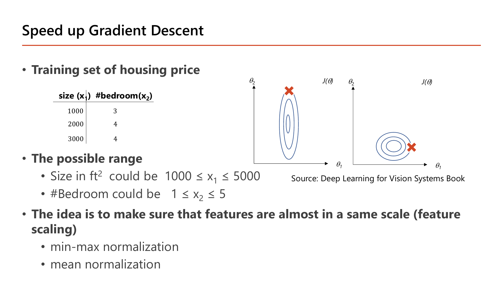
ปัญหาที่หน้านี้ตั้งขึ้น มาจากตัวเลขจริงในตาราง: บ้านสามหลังมี size = 1000, 2000, 3000 แต่ #bedroom = 3, 4, 4 และสไลด์ระบุช่วงที่เป็นไปได้ว่า \(1000 \le x_1 \le 5000\) กับ \(1 \le x_2 \le 5\). สังเกตว่าช่วงของ \(x_1\) กว้าง 4000 หน่วย ส่วน \(x_2\) กว้างแค่ 4 หน่วย — ต่างกันพันเท่า. ผลที่ตามมาคือ เมื่อขยับ \(\theta_1\) (สัมประสิทธิ์ของขนาดบ้าน) ไปนิดเดียว ค่าทำนายกระโดดมหาศาล แต่ขยับ \(\theta_2\) เท่ากันกลับแทบไม่มีผล. ค่า cost จึงไวต่อ \(\theta_1\) มากกว่า \(\theta_2\) หลายเท่า และ contour (เส้นระดับความสูงเท่ากันของชาม) ถูกบีบเป็นวงรีแคบยาว แทนที่จะเป็นวงกลม ตามภาพซ้ายของสไลด์ที่เครื่องหมายกากบาทเริ่มต้นอยู่ไกลจากใจกลางวงรี. บนภูมิประเทศแบบนี้ ทิศชันที่สุดไม่ได้ชี้ไปที่ก้นชาม gradient descent จึงเดินซิกแซกข้ามหุบไปมา ใช้รอบเยอะกว่าจะถึง. พอปรับสเกลให้ใกล้กัน contour กลมขึ้นแบบภาพขวา ทิศชันที่สุดก็ชี้ตรงเข้าก้นชามพอดี. อาจารย์สรุปเป็นประโยคเดียวว่า "the idea is to make sure that features are almost in a same scale (feature scaling)" และเสนอสองวิธีคือ min-max normalization กับ mean normalization.
สูตร min-max normalization ในสไลด์หน้า 35:
$$x_{\text{new}} = \frac{x - \min(x)}{\max(x) - \min(x)}$$วัดว่าค่านี้อยู่ "กี่ส่วนของช่วง" ตั้งแต่ต่ำสุดถึงสูงสุด — ผลลัพธ์อยู่ใน [0, 1] เสมอ
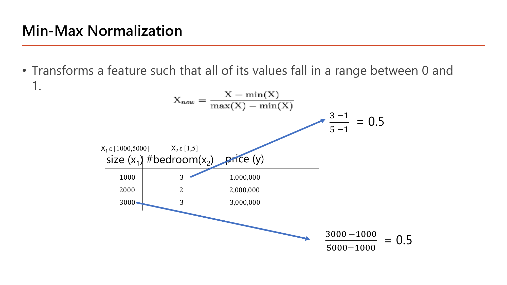
ค่าต่ำสุดของ feature กลายเป็น 0 และค่าสูงสุดกลายเป็น 1 เสมอ นี่คือที่มาของชื่อ "min-max"
ค่าตั้งต้นต่างกันมหาศาล (3000 vs 3) แต่ได้ 0.5 เท่ากัน เพราะทั้งคู่อยู่ "กึ่งกลางช่วงของตัวเอง" พอดี — min-max ไม่สนสเกลเดิม สนแค่ตำแหน่งสัมพัทธ์ ทำให้ทุก feature อยู่ [0,1] ก่อนเข้า gradient descent. ข้อควรระวัง: ถ้าข้อมูลใหม่มีค่านอกช่วงที่เคยเห็น เช่น บ้าน 6000 ตร.ฟุต จะได้ค่า \(1.25\) ซึ่งหลุดกรอบ [0,1] — จึงต้องจำค่า min/max จาก training set ไว้ใช้กับ test set ชุดเดียวกัน ห้ามคำนวณใหม่
\(\mu\) (มิว) = ค่าเฉลี่ย; \(\sigma\) (ซิกมาตัวเล็ก) = ส่วนเบี่ยงเบนมาตรฐาน ซึ่งแปลว่า "โดยเฉลี่ยแล้วข้อมูลห่างจากค่าเฉลี่ยเท่าไร".
คำนวณมือกับข้อมูล 1000, 2000, 3000:
(ถ้าหารด้วย \(m-1=2\) ตามสูตร sample จะได้ \(\sigma=1000\) พอดี — ทั้งสองแบบใช้กันทั่วไป ต่างกันเล็กน้อยเมื่อข้อมูลเยอะ)
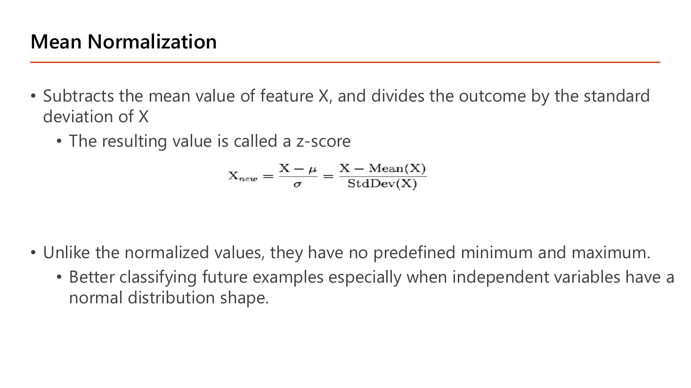
วิธีที่สองที่สไลด์หน้า 36 เสนอคือ Mean normalization: "subtracts the mean value of feature X, and divides the outcome by the standard deviation of X" เขียนเป็น
$$x_{\text{new}} = \frac{x-\mu}{\sigma} = \frac{x-\text{Mean}(X)}{\text{StdDev}(X)}$$ผลลัพธ์เรียกว่า z-score และสไลด์ย้ำข้อแตกต่างสองข้อ: (1) "unlike the normalized values, they have no predefined minimum and maximum" — ไม่มีขอบเขตตายตัวแบบ [0,1]; (2) "better classifying future examples especially when independent variables have a normal distribution shape" — เหมาะกว่าเมื่อข้อมูลกระจายเป็นรูประฆัง.
ค่าที่เท่ากับค่าเฉลี่ยพอดีได้ z-score เป็นศูนย์เสมอ
ได้ \([-1.22,\ 0,\ +1.22]\) — ติดลบได้ และไม่ถูกบีบใน [0,1] ต่างจาก min-max ที่ตัวเลขชุดเดียวกันจะได้ \([0,\ 0.25,\ 0.5]\) (เพราะช่วงอ้างอิงคือ [1000,5000]). ทั้งสองวิธีทำหน้าที่เดียวกันคือทำให้ทุก feature มีขนาดพอ ๆ กัน จึงทำให้ contour กลมขึ้นและ gradient descent เดินตรงขึ้น. แนวคิดนี้กลับมาเป็น Batch Normalization ใน Lesson 5 ซึ่งทำ z-score ให้กับค่าที่ออกจาก hidden layer ทุกชั้น ไม่ใช่แค่ input
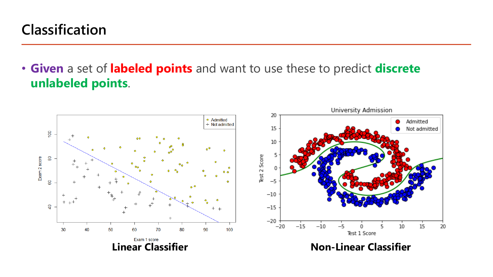
นิยามของงาน classification คือ Given a set of labeled points and want to use these to predict discrete unlabeled points — โครงเดียวกับ linear regression ทุกคำ ต่างกันคำเดียวคือผลลัพธ์เป็น discrete แทน continuous. สองกราฟบนสไลด์ใช้โจทย์การรับเข้ามหาวิทยาลัยเหมือนกันแต่ข้อมูลคนละแบบ. ฝั่ง Linear Classifier: แกนนอนคือคะแนน Exam 1 (ราว 30–100) แกนตั้งคือคะแนน Exam 2 (ราว 30–100) และเส้นตรงเส้นเดียวแยก Admitted ออกจาก Not admitted ได้เกือบหมด — อ่านเป็นกฎง่าย ๆ ว่า "ผลรวมคะแนนสองวิชาต้องถึงเกณฑ์". ฝั่ง Non-Linear Classifier: ข้อมูล Test 1 กับ Test 2 พันกันเป็นก้นหอยสองเกลียว ไม่มีเส้นตรงเส้นไหนแบ่งได้เลย ต้องใช้เส้นโค้งที่ม้วนตามเกลียว. ความต่างนี้คือเหตุผลทั้งหมดที่ต้องมี hidden layer ใน Lesson 2 — เพราะ logistic regression ตัวเดียวให้เส้นตรงได้อย่างเดียว (เว้นแต่จะเติม feature ยกกำลังเองอย่างในหน้า 43).
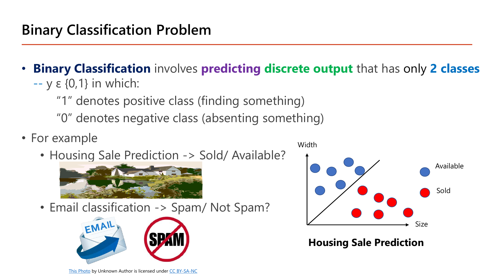
Binary Classification คือการ predicting discrete output ที่มีเพียง 2 classes -- \(y \in \{0,1\}\) โดยสไลด์นิยามความหมายของเลขสองตัวไว้ชัด: "1" denotes positive class (finding something) และ "0" denotes negative class (absenting something). จุดที่ต้องระวังคือคำว่า positive ไม่ได้แปลว่า "ดี" — มันแปลว่า "เจอสิ่งที่กำลังตามหา". ในตัวอย่าง Email classification สิ่งที่ตามหาคือสแปม ดังนั้น "spam = 1 = positive" ทั้งที่สแปมเป็นเรื่องแย่. ความเข้าใจนี้จำเป็นตรง ๆ กับหัวข้อ 7 เพราะ precision และ recall นับเฉพาะคลาส positive เท่านั้น ถ้าตีความ positive ผิด ตัวเลขทั้งชุดจะพลิก. อีกตัวอย่างคือ Housing Sale Prediction ที่กราฟแกน Size–Width แยก Sold (จุดที่กระจุกฝั่งล่างขวา) ออกจาก Available (ฝั่งบนซ้าย) ด้วยเส้นทแยง ซึ่งเราจะคำนวณเส้นนี้จริงในหน้า 43.
ความน่าจะเป็น คือตัวเลขระหว่าง 0 ถึง 1 ที่บอกโอกาสเกิด: 0 = ไม่เกิดแน่, 1 = เกิดแน่, 0.5 = ครึ่ง-ครึ่ง. เช่นโยนเหรียญออกหัวมีความน่าจะเป็น 0.5.
\(P(A \mid B)\) อ่านว่า "ความน่าจะเป็นของ A เมื่อรู้ว่า B" เส้นตั้งแปลว่า "โดยมีเงื่อนไขว่า". เช่น \(P(\text{ฝนตก} \mid \text{ฟ้าครึ้ม}) = 0.7\) แปลว่าถ้าเห็นฟ้าครึ้มแล้ว โอกาสฝนตกคือ 70%.
จำนวน \(e\) ≈ 2.71828 เป็นค่าคงที่ทางคณิตศาสตร์แบบเดียวกับ \(\pi\). สิ่งที่ต้องรู้มีแค่สามข้อ: \(e^0 = 1\); \(e^{\text{เลขบวก}}\) มีค่ามาก (เช่น \(e^2 = 7.39\)); \(e^{\text{เลขลบ}}\) มีค่าน้อยแต่ยังเป็นบวกเสมอ (เช่น \(e^{-2} = 0.135\)). ข้อสุดท้ายนี้คือเหตุผลที่ sigmoid ไม่มีวันให้ค่าติดลบหรือเกิน 1.
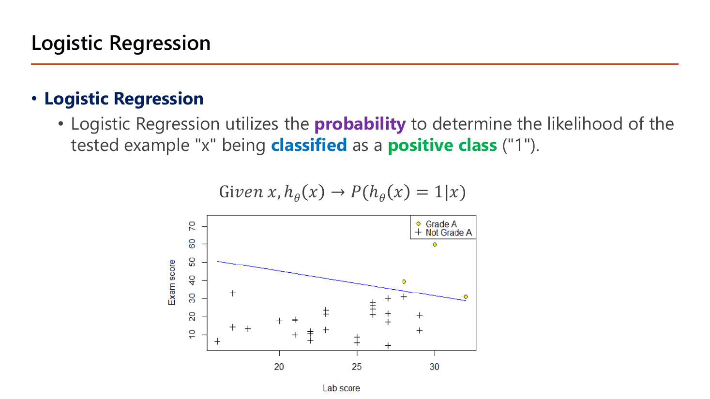
ประโยคนิยามคือ "Logistic Regression utilizes the probability to determine the likelihood of the tested example 'x' being classified as a positive class ('1')" พร้อมสัญกรณ์บนสไลด์ว่า
$$\text{Given } x,\quad h_\theta(x) \to P\!\left(h_\theta(x)=1 \mid x\right)$$อ่านว่า: ผลลัพธ์ของโมเดลไม่ใช่คำตอบ 0/1 โดยตรง แต่เป็น "ความน่าจะเป็นที่คำตอบจะเป็น 1 เมื่อเห็นข้อมูล x นี้"
จุดนี้คือสิ่งที่ทำให้ logistic regression ต่างจากการลากเส้นเฉย ๆ: ถ้าได้ \(h_\theta(x)=0.83\) แปลว่าโมเดลบอกว่า "ผมมั่นใจ 83% ว่าตัวอย่างนี้เป็นคลาสบวก" ไม่ใช่ "คำตอบคือ 0.83". การจะเปลี่ยนความมั่นใจเป็นคำตอบต้องมี threshold อีกชั้นหนึ่ง (ปกติ 0.5) ซึ่งเป็นตัวที่หัวข้อ 7 จะเลื่อนไปมาเพื่อสร้าง ROC curve. ตัวอย่างในสไลด์ใช้ข้อมูลนักศึกษาที่มี Lab score (ราว 15–32) กับ Exam score (ราว 5–70) และแบ่งว่าใครได้ Grade A — จะเห็นว่าจุด Grade A กระจุกอยู่ฝั่งที่ทั้ง lab และ exam สูง ซึ่งพอเดาได้ว่ามีเส้นแบ่งเชิงเส้นอยู่จริง.
![Model Representation slide for logistic regression: it is used for classification despite operating with linear regression equations to establish a relationship between input and target variables; an example predicts whether housing is high-end or low-end from size alone, with a table of sizes 1000, 2000, 3000 mapped to prices 0, 1, 1; the left chart tries fitting a straight regression line y = theta0 + theta1 x through points pinned at 0 and 1, while the right chart maps x from minus infinity to infinity into 0 to 1 with an S-shaped logistic curve y = g(theta0 + theta1 x)](../assets/slides/dl1-p41-model-representation-logistic.png)
หน้านี้เล่าเหตุผลว่าทำไมต้องมี sigmoid ด้วยตัวอย่างที่คำนวณตามได้: Logistic regression ใช้กับ classification ทั้งที่เบื้องหลังใช้สมการของ linear regression เพื่อสร้าง relationship between input and target variables. ข้อมูลในตารางมีสามแถว — size 1000 → price class 0 (low), size 2000 → 1 (high), size 3000 → 1 (high). ถ้าลอง fitting a linear regression ตรง ๆ ตามภาพซ้าย จะได้เส้น \(y=\theta_0+\theta_1x\) ที่ทะลุขึ้นเหนือ 1 และลงต่ำกว่า 0 เมื่อ \(x\) โตหรือเล็กเกินช่วงข้อมูล ซึ่งไร้ความหมายทันที: บ้าน 10,000 ตร.ฟุต จะได้ค่าทำนายอย่าง 4.2 ทั้งที่คลาสมีแค่ 0 กับ 1. ทางออกที่สไลด์เสนอคือใช้ Logistic function ซึ่งเป็น "the inverse of logit, which is a transformation from [-inf, inf] to [0,1]" ได้ภาพขวาที่เส้นกลายเป็นรูปตัว S แนบ 0 ทางซ้ายและแนบ 1 ทางขวา — ไม่มีวันหลุดกรอบ. สังเกตคำว่า mapping ที่สไลด์ใช้: เราไม่ได้เปลี่ยนสมการเชิงเส้นข้างในเลย แค่เอาผลลัพธ์ของมันไป "บีบ" อีกที.
![Model Representation (2) slide: with two input variables, the line x2 = theta0 + theta1 x1 is rearranged to 0 = theta0 + theta1 x1 + theta2 x2; after training theta0, theta1, theta2 the output theta0 + theta1 x1 + theta2 x2 lies in the range minus infinity to infinity and is mapped to 0 to 1, where a value of exactly 0 is unpredictable and predicts 0.5, greater than 0 predicts class 1 and less than 0 predicts class 0; the sigmoid logistic function g(z) = 1/(1 + e^-z) is highlighted, with a scatter plot of Sold and Available points split by a diagonal line](../assets/slides/dl1-p42-model-representation2-decision-boundary-setup.png)
สไลด์เริ่มจากกรณี two input variables แล้วจัดรูปสมการเส้นตรงใหม่ทีละขั้น: เส้นแบ่งบนระนาบเขียนได้เป็น \(x_2=\theta_0+\theta_1x_1\) จากนั้น "ย้ายข้างสมการ" (คำที่อาจารย์เขียนกำกับไว้เป็นภาษาไทยบนสไลด์) ได้ \(0=\theta_0+\theta_1x_1-x_2\) ซึ่งเขียนรูปทั่วไปว่า \(0=\theta_0+\theta_1x_1+\theta_2x_2\). ประโยชน์ของการจัดรูปแบบนี้คือทำให้ "อยู่ฝั่งไหนของเส้น" กลายเป็นแค่เรื่องเครื่องหมายของนิพจน์เดียว. หลังเทรนได้ \(\theta_0,\theta_1,\theta_2\) แล้ว ค่า \(\theta_0+\theta_1x_1+\theta_2x_2\) อยู่ในช่วง [-inf, inf] จึงต้อง Mapping ไปเป็น [0,1] และสไลด์ระบุเกณฑ์ไว้สามบรรทัด: ถ้าค่าเท่ากับ 0 พอดี → "unpredictable, predict y = 0.5"; ถ้ามากกว่า 0 → predict y = "1"; ถ้าน้อยกว่า 0 → predict y = "0". ฟังก์ชันที่ทำหน้าที่บีบคือ sigmoid ในกรอบเหลือง:
$$\text{Given } z=\sum_{i=0}^{n}\theta_ix_i,\qquad h = g(z) = \frac{1}{1+e^{-z}}$$ตรงกับคำว่า "unpredictable" บนสไลด์ — ไม่เอียงไปทางคลาสไหน
เข้าใกล้ 1 และ 0 แต่ไม่เคยแตะพอดี — จึงบอกได้ว่า "มั่นใจมาก" แต่ไม่เคย "มั่นใจ 100%"
\(z\) บวกมาก ⇒ ใกล้ 1, \(z\) ลบมาก ⇒ ใกล้ 0, \(z=0\) ⇒ 0.5 พอดี. จึงตัดสินใจง่าย ๆ ว่า ทำนาย \(y=1\) เมื่อ \(z \ge 0\) (เพราะ \(g(z)\ge0.5\)) และเส้น \(z=0\) คือ decision boundary — สังเกตว่าเราไม่เคยต้องคำนวณ sigmoid เลยถ้าต้องการแค่คำตอบ 0/1 ดูเครื่องหมายของ \(z\) ก็พอ. สมบัติสมมาตรที่ควรจำ: \(g(-z) = 1-g(z)\) เช่น \(0.119 = 1-0.881\)
![Understand Decision Boundary slide: a boundary separating the areas where y = 1 and y = 0; on the left, h(x) = g(theta0 + theta1 x1 + theta2 x2) with theta0 = 0, theta1 = -1, theta2 = 1 predicts Sold when the expression exceeds 0, with a test point at x1 = 100, x2 = 90 and a diagonal boundary through the origin; on the right, h(x) = g(theta0 + theta1 x1 squared + theta2 x2 squared) with theta0 = -4, theta1 = 1, theta2 = 1 predicts y = 1 when the expression is at least 0, with a test point at the origin and a circular boundary of radius 2 marked at plus and minus 2 on both axes](../assets/slides/dl1-p43-decision-boundary-linear-nonlinear-numeric.png)
Decision Boundary คือ "a boundary that separates the area of different classes (in this example is where y = 1 and where y = 0)". สไลด์ตั้งโจทย์ไว้สองข้อพร้อมค่า \(\theta\) จริงและจุดทดสอบจริง — สองข้อนี้เป็นแบบฝึกหัดที่มีโอกาสออกสอบสูงมาก เพราะคำนวณมือได้ใน 30 วินาทีถ้าเข้าใจ.
\(-10 < 0\) ⇒ \(g(-10) \approx 0.000045\) ⇒ ทำนาย \(y=0\) ("Available")
จุดที่ \(x_2 > x_1\) ได้ \(z>0\) ⇒ Sold (ฝั่งบนของเส้น); จุดที่ \(x_2 < x_1\) ⇒ Available. จุดทดสอบ (100, 90) มี \(x_2 < x_1\) จึงอยู่ใต้เส้น
คำตอบ: Available (y = 0). บ้านหลังนี้ยาว 100 แต่กว้างแค่ 90 — ตามกฎที่โมเดลเรียนมา "บ้านที่กว้างน้อยกว่ายาว" ยังไม่ถูกขาย
คือวงกลมรัศมี 2 รอบจุดกำเนิด ตรงกับเลข \(2\) และ \(-2\) ที่สไลด์กำกับบนแกนทั้งสอง — จุดในวง (\(x_1^2+x_2^2<4\)) ได้ \(z<0\); จุดนอกวง ได้ \(z>0\)
แค่เปลี่ยน feature จาก \(x\) เป็น \(x^2\) เส้นแบ่งก็เปลี่ยนจากเส้นตรงเป็นวงกลม โดยสมการยังเป็น "เชิงเส้นใน \(\theta\)" เหมือนเดิม — นี่คือแก่นของคำว่า non-linear decision boundary: ความโค้งมาจาก feature ไม่ใช่จากสูตร. แนวคิดเดียวกับที่ hidden layer ใน Lesson 2 สร้าง feature ใหม่ให้เอง แทนที่เราจะต้องนั่งเดาว่าควรยกกำลังสองตัวไหน
\(\log\) เป็นฟังก์ชันตรงข้ามของการยกกำลัง. ในวิชานี้เวลาเขียน \(\log\) เฉย ๆ หมายถึงฐานธรรมชาติ \(\ln\) (ฐาน \(e\)) เสมอ.
สิ่งที่ต้องรู้มีสามข้อ และทั้งสามข้อคือเหตุผลที่ log loss ทำงานได้:
ลองคำนวณเอง: \(-\ln(0.9)=0.105\) (เกือบถูก โทษน้อย) เทียบกับ \(-\ln(0.1)=2.303\) (ผิดมาก โทษหนักกว่า 22 เท่า).
ถ้าเอา MSE ไปใช้กับ sigmoid จะได้ cost ที่ไม่นูน (มีหลุมหลอกหลายจุด) gradient descent จึงอาจติดหลุมได้. สไลด์หน้า 44 จึงตั้ง Goal: find parameters \(\theta\) to minimize J(θ) แล้วเปลี่ยนไปใช้ Cross-Entropy / Log Loss. เริ่มจากกรณี one training example คือมีแค่ \((x^{(1)},y^{(1)})\):
$$\text{Cost}\big(h_\theta(x^{(1)}), y^{(1)}\big) = -y^{(1)}\log\big(h_\theta(x^{(1)})\big) - \left(1-y^{(1)}\right)\log\big(1-h_\theta(x^{(1)})\big)$$มีเพียงเทอมเดียวที่ "ทำงาน" เสมอ: ถ้า \(y=1\) เหลือ \(-\log h\); ถ้า \(y=0\) เหลือ \(-\log(1-h)\)
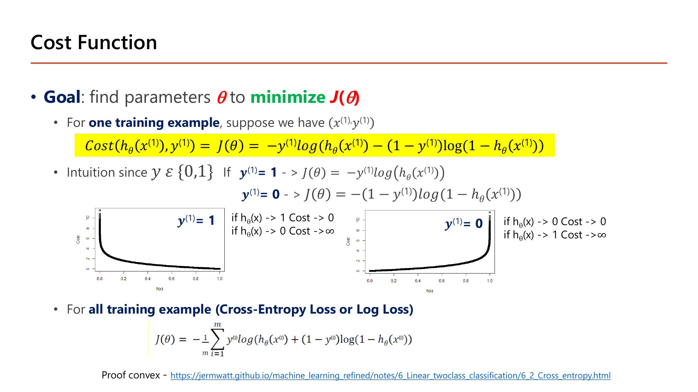
สไลด์อธิบาย intuition ด้วยการแยกสองกรณีตามค่า \(y\) แล้ววาดกราฟให้ดูคู่กัน (แกนนอนคือ \(h_\theta(x)\) ตั้งแต่ 0.0 ถึง 1.0 แกนตั้งคือ Cost ตั้งแต่ 0 ถึงราว 10):
กราฟสองอันจึงเป็นภาพสะท้อนกันในแนวตั้ง — คู่เงื่อนไข 𝒚 (1) = 1 𝒚 (1) = 0 นี้เป็นสิ่งที่ข้อสอบชอบสลับให้ผิด. สาระคือกลไกเดียวกันทั้งสองกรณี: ลงโทษหนักเมื่อมั่นใจผิด ไม่ลงโทษเมื่อมั่นใจถูก.
ยิ่งทำนายผิดอย่างมั่นใจ cost ยิ่งพุ่ง (\(h \to 0\) ⇒ cost \(\to \infty\)) และทำนายถูกอย่างมั่นใจ (\(h\to1\)) ⇒ cost \(\to 0\) — ตรงกับกราฟบนสไลด์. ตัวเลข 0.693 = ln 2 คือค่า cost ของโมเดลที่ยังไม่รู้อะไรเลย (ตอบ 0.5 ทุกข้อ) และจะกลับมาเป็นค่า loss เริ่มต้นที่เห็นใน Lesson 3–4 เสมอ ถ้าเทรนแล้ว loss ไม่ลดต่ำกว่า 0.693 แปลว่าโมเดลยังไม่ได้เรียนรู้อะไรเลย
เมื่อรวมทุกตัวอย่างเข้าด้วยกันจะได้สูตรสำหรับ all training example (Cross-Entropy Loss or Log Loss) ตามที่สไลด์เขียนไว้:
$$J(\theta) = -\frac{1}{m}\sum_{i=1}^{m}\Big[y^{(i)}\log h_\theta(x^{(i)}) + \left(1-y^{(i)}\right)\log\left(1-h_\theta(x^{(i)})\right)\Big]$$ตัวอย่างแรก \(y=0\) จึงใช้ \(-\ln(1-h)\); อีกสองตัว \(y=1\) จึงใช้ \(-\ln h\)
\(J_A = 0.228\) เทียบ \(J_B = 1.243\) — โมเดล A ดีกว่าราว 5.4 เท่าในสายตาของ cost function. สังเกตว่า B ตอบ "ผิดฝั่ง" ทั้งสามข้อ (ควรตอบต่ำแต่ตอบสูง และกลับกัน) และทุกค่าของ B สูงกว่า \(\ln 2=0.693\) ซึ่งเป็นเกณฑ์ของการเดาสุ่ม — แปลว่า B แย่กว่าการโยนเหรียญ
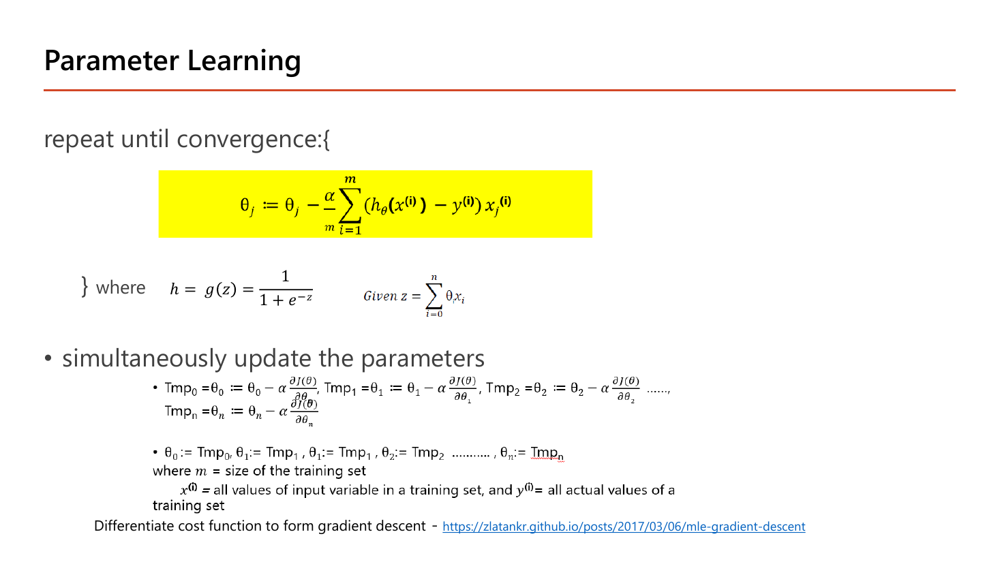
เรื่องที่น่าทึ่งที่สุดของหน้า 45 คือสูตรอัปเดตพารามิเตอร์ของ logistic regression หน้าตาเหมือน linear regression ทุกตัวอักษร:
$$\theta_j := \theta_j - \frac{\alpha}{m}\sum_{i=1}^{m}\left(h_\theta(x^{(i)}) - y^{(i)}\right)x_j^{(i)}$$ต่างกันแค่ตรงที่สไลด์เขียนกำกับไว้ว่า "where \(h=g(z)=\frac{1}{1+e^{-z}}\), given \(z=\sum_{i=0}^{n}\theta_ix_i\)" — คือ \(h\) ถูกส่งผ่าน sigmoid ก่อน ส่วนโครงสูตรเดิมเป๊ะ และยังต้อง simultaneously update ด้วยตัวแปรพัก \(\text{Tmp}_0,\text{Tmp}_1,\dots,\text{Tmp}_n\) เหมือนเดิม. เหตุผลที่ลดรูปได้ขนาดนี้: อนุพันธ์ของ log loss ไปตัดกับอนุพันธ์ของ sigmoid \(g'(z)=g(z)(1-g(z))\) พอดี ทำให้เหลือแค่ "ค่าทำนาย − ค่าจริง" คูณ feature (สไลด์ให้ลิงก์พิสูจน์ไว้ และ Lesson 3 จะพิสูจน์เต็ม). ผลเชิงปฏิบัติคือ: ถ้าเขียนโค้ด gradient descent ของ regression ได้แล้ว เปลี่ยนไปทำ classification แค่เพิ่มบรรทัด sigmoid บรรทัดเดียว.
![Metrics from Confusion Matrix slide: a table summarising how successful a classification model is; accuracy is the proportion of correct predictions, precision is the accuracy of positive predictions, recall is the ratio of positive instances correctly detected, and F1 combines precision and recall assuming both are equally important; a handwritten-digit example detects the digit 5 as the positive class with quadrants TN, FP, FN, TP, where precision is 3 out of 4 and recall is 3 out of 5; a precision-recall trade-off strip shows precision 6/8 = 75% with recall 6/6 = 100%, precision 4/5 = 80% with recall 4/6 = 67%, and precision 3/3 = 100% with recall 3/6 = 50% as the threshold slides right](../assets/slides/dl1-p46-confusion-matrix-metrics.png)
สไลด์นิยาม confusion matrix ว่าเป็น "table that summarizes how successful a classification model is at predicting examples belonging to various classes" แล้วให้สี่สูตรที่ต้องแยกให้ออก. เมื่อทำนายแบบ 2 คลาส ผลแต่ละตัวอย่างตกใน 4 ช่อง: TP (ทำนายบวก จริงบวก), TN (ทำนายลบ จริงลบ), FP (ทำนายบวก แต่จริงลบ), FN (ทำนายลบ แต่จริงบวก).
$$\text{accuracy}=\frac{TP+TN}{FP+FN+TP+TN},\qquad \text{precision}=\frac{TP}{TP+FP},\qquad \text{recall}=\frac{TP}{TP+FN}$$ $$F_1=\cfrac{2}{\cfrac{1}{\text{precision}}+\cfrac{1}{\text{recall}}}=2\times\frac{\text{precision}\times\text{recall}}{\text{precision}+\text{recall}}=\frac{TP}{TP+\cfrac{FN+FP}{2}}$$precision ถามว่า "ที่ทำนายว่าใช่ ถูกกี่ %" ส่วน recall ถามว่า "ของจริงทั้งหมด จับได้กี่ %" — ตัวเศษเหมือนกัน ต่างกันที่ตัวส่วน
ตัวอย่างบนสไลด์เป็นตัวตรวจจับเลข "5" จากภาพลายมือ โดยกำหนดให้เลข 5 เป็น positive class. อ่านตัวเลขที่อาจารย์กำกับไว้: ช่อง Predicted Positive มีภาพอยู่ 4 ภาพ ซึ่งเป็นเลข 5 จริง 3 ภาพ ⇒ Precision = 3 out of 4 = 0.75; ส่วนแถว Actual Positive มีเลข 5 จริงทั้งหมด 5 ภาพ แต่ตรวจเจอ 3 ภาพ ⇒ Recall = 3 out of 5 = 0.60. คำนวณ \(F_1\) ได้ \(2(0.75)(0.60)/(0.75+0.60)=0.667\). สิ่งที่ตัวเลขคู่นี้บอกคือ "เวลาบอกว่าใช่ก็ค่อนข้างเชื่อได้ (75%) แต่พลาดของจริงไปถึง 2 ใน 5".
แถบล่างขวาของสไลด์สาธิต Precision Recall Trade-off ด้วยตัวเลขสามชุดจากการเลื่อน threshold ไปทางขวาทีละขั้นบนแถวของภาพที่เรียงตามคะแนนความมั่นใจ:
| threshold | precision | recall | \(F_1\) | อ่านว่า |
|---|---|---|---|---|
| ต่ำ (ทำนายบวก 8 ภาพ) | 6/8 = 75% | 6/6 = 100% | 0.857 | จับครบทุกตัว แต่เหวี่ยงแหกว้างจึงมีของปลอมติดมา 2 |
| กลาง (ทำนายบวก 5 ภาพ) | 4/5 = 80% | 4/6 = 67% | 0.727 | แม่นขึ้นเล็กน้อย แต่เริ่มพลาดของจริงไป 2 ตัว |
| สูง (ทำนายบวก 3 ภาพ) | 3/3 = 100% | 3/6 = 50% | 0.667 | ที่บอกว่าใช่ถูกหมด แต่จับได้แค่ครึ่งเดียว |
ไล่ตัวเลขตามแถวจะเห็นกฎที่สไลด์เขียนไว้ว่า "increasing precision reduces recall (vice versa)" เป็นรูปธรรม: precision ไต่ขึ้น 75 → 80 → 100% ขณะที่ recall ร่วง 100 → 67 → 50%. เหตุผลเชิงกลไกคือการขยับ threshold ขึ้นทำให้ทำนายบวกน้อยลง ⇒ FP ลด (precision ขึ้น) แต่ FN เพิ่ม (recall ลง) — ตัวเศษ TP ก็ลดลงด้วยทั้งสองฝั่ง. การเลือกจุดที่เหมาะจึงขึ้นกับงาน: คัดกรองมะเร็งต้องการ recall สูง (ห้ามพลาดผู้ป่วย) ส่วนระบบกรองสแปมต้องการ precision สูง (ห้ามทิ้งอีเมลสำคัญ).
ทำไมใช้ harmonic mean ไม่ใช่ค่าเฉลี่ยธรรมดา? เพราะถ้าตัวใดตัวหนึ่งแย่มาก harmonic mean จะถูกดึงลงแรง — ลองดู precision 1.0 กับ recall 0.0: ค่าเฉลี่ยธรรมดาได้ 0.5 (ดูดีเกินจริง) แต่ \(F_1\) ได้ 0
สรุป: accuracy 0.85, precision 0.889, recall 0.80, \(F_1\) 0.842. ข้อควรระวังที่ออกสอบบ่อยคือ accuracy หลอกได้เมื่อข้อมูลไม่สมดุล — ถ้ามีบวกจริงแค่ 1 ตัวใน 100 โมเดลที่ตอบ "ลบ" ทุกข้อจะได้ accuracy 99% ทั้งที่ recall = 0 จับอะไรไม่ได้เลย
![ROC Curve slide: a graphical representation of the performance of a binary classifier as the discrimination threshold is varied, plotting true positive rate TPR = TP/(TP+FN), also called sensitivity, against false positive rate FPR = FP/(FP+TN), also called one minus specificity; the area under the curve AUC gives a single metric to compare classifiers and helps choose an appropriate threshold; the main plot shows a solid curve rising steeply toward the top-left corner above a dashed diagonal that represents random guessing, and a companion plot shows several curves ranked from better nearer the top-left to worse nearer the diagonal](../assets/slides/dl1-p47-roc-curve.png)
ROC Curve เป็นการแสดงภาพของ performance of a binary classifier เมื่อค่า threshold ถูกเปลี่ยนไปเรื่อย ๆ โดยพล็อต true positive rate (TPR) เทียบกับ false positive rate (FPR) ที่ทุกค่า threshold ตามสูตร
$$\text{TPR} = \frac{TP}{TP+FN}\ (\text{Sensitivity}),\qquad \text{FPR} = \frac{FP}{FP+TN}\ (1-\text{Specificity})$$ข้อความบนกราฟของสไลด์อธิบายคุณสมบัติสำคัญสองข้อไว้: เส้นทึบ "will always start at (0.0, 0.0) and end at (1.0, 1.0)" เพราะที่ threshold สูงสุดไม่มีอะไรถูกทำนายเป็นบวกเลย และที่ threshold ต่ำสุดทุกอย่างถูกทำนายเป็นบวกหมด; และ "the closer we get to (0.0, 1.0), the more accurate the model" คือยิ่งโค้งชิดมุมซ้ายบนยิ่งดี. ส่วนเส้นประทแยงคือโมเดลที่ทำนายตามอัตรา 0/1 ในข้อมูลแบบสุ่ม ซึ่ง "the true positive rate is equal to the false positive rate". สไลด์ยังบอกด้วยว่า ROC มีประโยชน์เพราะให้ตัวเลขเดียวคือพื้นที่ใต้กราฟ (AUC) ไว้เทียบโมเดลต่างรุ่น และช่วยเลือก appropriate threshold โดยดู trade-off ระหว่าง TPR กับ FPR ได้พร้อมกัน.
TP = 1, FP = 0, FN = 2, TN = 3
$$\text{TPR} = \tfrac{1}{3} = 0.33,\qquad \text{FPR} = \tfrac{0}{3} = 0$$TP = 2, FP = 0, FN = 1, TN = 3
$$\text{TPR} = \tfrac{2}{3} = 0.67,\qquad \text{FPR} = \tfrac{0}{3} = 0$$TP = 3 (0.9, 0.8, 0.55), FP = 1 (0.6), FN = 0, TN = 2
$$\text{TPR} = \tfrac{3}{3} = 1.00,\qquad \text{FPR} = \tfrac{1}{3} = 0.33$$ได้มุมขวาบน (1,1) ตามที่สไลด์บอกว่าเส้นต้องจบที่จุดนี้เสมอ
ลากจุด (0, 0.33), (0, 0.67), (0.33, 1.00), (1, 1) ต่อกันได้เส้นที่พุ่งขึ้นชิดแกนตั้งก่อนแล้วค่อยไปทางขวา = โค้งเข้าหามุมซ้ายบน. คำนวณพื้นที่ใต้กราฟได้ \(\text{AUC} = 8/9 \approx 0.889\) ซึ่งตีความได้ตรงตัวว่า "ถ้าหยิบตัวอย่างบวกจริง 1 ตัวกับลบจริง 1 ตัวมาสุ่ม โอกาสที่โมเดลให้คะแนนตัวบวกสูงกว่าคือ 88.9%" — คู่เดียวที่พลาดคือ 0.55 (บวกจริง) ได้คะแนนน้อยกว่า 0.6 (ลบจริง) จึงเป็น 8 จาก 9 คู่. เส้นทะแยง 45° คือการเดาสุ่ม (AUC = 0.5) และ AUC = 1.0 คือแยกได้สมบูรณ์
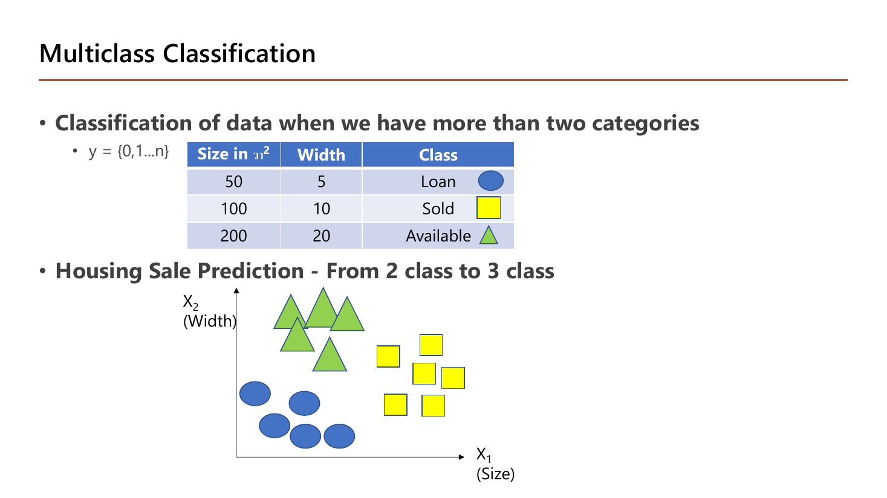
หน้านี้ขยายโจทย์เดิมจากสองคลาสเป็นสามคลาส: "classification of data when we have more than two categories" โดย \(y=\{0,1,\dots,n\}\). ตารางบนสไลด์ให้ตัวอย่างจริงสามแถว — บ้านขนาด 50 ตร.วา กว้าง 5 อยู่ในสถานะ Loan; ขนาด 100 กว้าง 10 อยู่ในสถานะ Sold; ขนาด 200 กว้าง 20 อยู่ในสถานะ Available. จุดสำคัญที่ต้องเข้าใจก่อนไปต่อคือ สามคลาสนี้ไม่มีลำดับ: Loan ไม่ได้ "มากกว่า" Sold และ Sold ไม่ได้ "อยู่ระหว่าง" Loan กับ Available. ดังนั้นการใช้ linear regression ทำนายเลข 0/1/2 แล้วปัดเศษจึงผิดตั้งแต่ตั้งโจทย์ — เพราะมันบังคับให้เกิดลำดับที่ไม่มีอยู่จริง. สองวิธีที่สไลด์เสนอ (one-vs-rest กับ softmax) ต่างก็หลบปัญหานี้ด้วยการให้ "คะแนนแยกต่อคลาส" แล้วเลือกตัวที่คะแนนสูงสุด.
![One versus Rest (or All) Algorithm slide: train the logistic regression classifier h-theta-i(x) for each class i as a binary problem to predict the probability that y = i; to make a prediction on a new test example x, pick the class that maximizes h-theta-i(x) where h-theta-i(x) = P(y = i given x and theta) for i = 1, 2, 3; the original three-class scatter is redrawn as three separate plots in which one class keeps its own symbol while the other two classes are merged into a single rest class marked by red crosses](../assets/slides/dl1-p49-one-vs-rest-scatter.png)
วิธีแรกคือ One-vs-Rest: train the logistic regression classifier \(h_\theta^{(i)}(x)\) for each class \(i\) (binary) เพื่อทำนายความน่าจะเป็นที่ \(y=i\) จากนั้นเวลาจะทำ prediction กับตัวอย่างใหม่ \(x\) ให้เลือกคลาสที่ maximizes \(h_\theta^{(i)}(x)\) โดยที่ \(h_\theta^{(i)}(x)=P(y=i \mid x;\theta)\) สำหรับ \(i=1,2,3\). วิธีอ่านสามกราฟย่อยบนสไลด์: กราฟแรกเก็บคลาส Loan ไว้เป็นของจริงแล้วรวม Sold กับ Available เป็น "rest" ก้อนเดียว แล้วลากเส้นตรงหนึ่งเส้นแยกสองก้อนนี้; กราฟที่สองทำแบบเดียวกันกับคลาส Available; กราฟที่สามกับคลาส Sold. ผลคือได้โมเดล binary 3 ตัว แต่ละตัวตอบคำถามเดียวว่า "ใช่คลาสนี้หรือไม่". สมมติป้อนบ้านหลังใหม่เข้าไปแล้วได้ \(h^{(1)}=0.3,\ h^{(2)}=0.7,\ h^{(3)}=0.2\) ⇒ ตอบคลาสที่ 2. ข้อสังเกตที่เป็นข้อเสีย: ผลรวม \(0.3+0.7+0.2=1.2\) ไม่เท่ากับ 1 เพราะแต่ละโมเดลถูกฝึกแยกกันไม่เคย "คุยกัน" — และถ้ามี \(k\) คลาสก็ต้องเทรน \(k\) โมเดล.
![Multiclass Logistic Regression (Softmax) slide: an extension of logistic regression to multiple classes that uses only one single model and the softmax function instead of sigmoid; the loss is minus one over m times the double sum over examples and classes of y_k log h(x)_k, where y_k is 1 only for the correct class; softmax rescales outputs so class scores add up to one, returning the probability distribution over mutually exclusive classes, defined by t_i = e to the z_i and a_i = t_i divided by the sum of all t_i; a note explains the exponential handles negative outputs and amplifies the maximum value so the model is less neutral](../assets/slides/dl1-p50-softmax-multiclass.png)
Softmax แก้ข้อเสียข้างบนด้วยโมเดลเดียว. สไลด์เขียนไว้สามบรรทัด: เป็น "extension of logistic regression to multiple classes", "rather than using k logistic regression models, this method use only one single model" และ "uses softmax function instead of sigmoid". นิยามของฟังก์ชันคือให้ \(t_i=e^{z_i^{[L]}}\) แล้ว
$$a_i^{[L]} = \frac{t_i}{\sum_{i=1}^{n} t_i}$$โดยสไลด์อธิบายว่า softmax rescales outputs ให้คะแนนทุกคลาสรวมกันได้ 1 และคืนค่าเป็น probability distribution ของคลาสที่ไม่ทับซ้อนกัน แล้วโมเดลจึงเลือกคลาสที่ความน่าจะเป็นสูงสุด. ส่วน loss ที่สไลด์ให้ไว้คือ
$$J(\theta) = -\frac{1}{m}\sum_{i=1}^{m}\sum_{k=1}^{K} y_k^{(i)}\log h_\theta(x^{(i)})_k$$พร้อมหมายเหตุสำคัญว่า \(y_k^{(i)}=1\) เฉพาะ correct class เท่านั้น นอกนั้นเป็น 0 — การเขียนแบบนี้เรียกว่า one-hot encoding และทำให้ผลรวมชั้นใน \(\sum_k\) เหลือเทอมเดียวเสมอ คือ \(-\log\) ของความน่าจะเป็นที่โมเดลให้กับคลาสที่ถูก.
คลาสแรกชนะที่ 66.5%. สไลด์ให้เหตุผลของการใช้ exponential ไว้สองข้อซึ่งตรวจได้ด้วยตัวเลขนี้: (1) "some output might be negative" — ถ้าใช้ \(z_i/\sum z_n\) ตรง ๆ กับ \(z=[2,1,0]\) จะได้ \([0.667, 0.333, 0]\) ซึ่งบังเอิญยังดูใช้ได้ แต่ถ้า \(z=[2,-1,-1]\) ผลรวมจะเป็น 0 และหารไม่ได้เลย; (2) "amplifies the maximum value relative to the other values, forcing the model to be 'less neutral' toward prediction" — ระยะห่างของ \(z\) คือ 2 ต่อ 1 (อัตราส่วน 2 เท่า) แต่หลัง exponential กลายเป็น 0.665 ต่อ 0.245 (อัตราส่วน 2.7 เท่า) คือช่องว่างถูกถ่างให้ชัดขึ้น
สองเทอมหลังคูณด้วย 0 จึงหายไป เหลือเทอมเดียวเสมอ
โมเดลให้ความน่าจะเป็นกับคลาสที่ถูกน้อย ⇒ loss สูง (2.408 เทียบ 0.408). ค่าอ้างอิงที่ควรจำ: โมเดลสุ่มบน \(K\) คลาสให้ loss \(=\ln K\) (สองคลาสได้ \(\ln 2=0.693\), สามคลาสได้ \(\ln 3=1.099\)) — เป็นตัวเลขที่ใช้ตรวจว่าโมเดลเริ่มเรียนรู้แล้วหรือยังใน Lesson 4. นี่คือ cross-entropy ตัวเดียวกับหัวข้อ 6 ที่ขยายจาก 2 คลาสเป็น \(K\) คลาส
![Model Evaluation slide: goal is to determine how well a model performs on unseen examples; evaluate using Training, Validation and Test Set split randomly 70-15-15 or 60-20-20, or Training and Test Set split 80-20 or 70-30 with cross validation; regression problems use linear regression while classification problems use logistic regression; train the model to optimize parameters using the training set with J_train, perform model selection by choosing the least error in the validation set, and estimate generalization error using the test set with J_test, with squared-error and log-loss formulas given for each of the three splits; a note says all three datasets should have similar statistical properties](../assets/slides/dl1-p51-model-evaluation-splits.png)
Goal ของหัวข้อนี้คือดูว่าโมเดลจะทำงานได้ how well บน unseen examples — คำว่า "unseen" คือหัวใจ เพราะถ้าวัดผลบนข้อมูลที่ใช้เทรน โมเดลที่ "ท่องจำ" ก็ได้คะแนนเต็ม ทั้งที่ทำนายข้อมูลใหม่ไม่ได้เลย. หัวข้อ How to evaluate the model ให้สองทางเลือก:
บรรทัดที่อาจารย์ทำสีแดงไว้ทั้งบรรทัดคือ Regression Problems – Linear Regression<==> Classification Problems – Logistic Regression ซึ่งบอกว่าทุกสูตรในหน้านี้มีสองเวอร์ชันคู่กันเสมอ: ฝั่งซ้ายใช้ squared error ฝั่งขวาใช้ log loss. ขั้นตอนสามข้อที่สไลด์ไล่ไว้พร้อมสูตรคือ:
สังเกตว่าทั้งสามสูตร หน้าตาเหมือนกันเป๊ะ ต่างกันแค่ว่าเอาข้อมูลก้อนไหนมาใส่ — ความต่างที่แท้จริงอยู่ที่ ใครมีสิทธิ์เปลี่ยนแปลงอะไรจากตัวเลขนั้น: \(J_{\text{train}}\) ใช้ปรับ \(\theta\), \(J_{cv}\) ใช้เลือก hyperparameter, ส่วน \(J_{\text{test}}\) ห้ามใช้ปรับอะไรทั้งสิ้น ดูครั้งเดียวตอนจบ. ท้ายสไลด์ยังมีหมายเหตุสามดาวว่า "make sure all three datasets (training, validation, test) have similar statistical properties" — ถ้าเผลอแบ่งข้อมูลโดยเรียงตามเวลาหรือตามพื้นที่ เช่น train เป็นบ้านในเมืองทั้งหมดแต่ test เป็นบ้านชานเมืองทั้งหมด ตัวเลขที่ได้จะไม่มีความหมาย.
![Cross Validation slide: cross-validation is a resampling procedure used to evaluate machine learning models where training might not have been homogeneously selected as a representation of data or where there is a limited data sample, giving a less biased or less optimistic estimate; two mean-squared-error against degree-of-polynomial charts compare a single validation split with many repeated splits whose curves scatter widely; k-fold cross validation divides the training examples into k groups or folds of approximately equal size, holds out one fold as validation and fits on the remaining k-1 folds; a schematic shows 5-fold CV as five rows where a different orange block is held out in each row](../assets/slides/dl1-p52-cross-validation-kfold.png)
Cross-validation คือ resampling procedure ที่ใช้ประเมินโมเดลในกรณีที่ชุด training might not have been homogeneously selected เป็นตัวแทนของข้อมูล หรือกรณีที่มี limited data sample ผลที่ได้คือ "less biased or less optimistic estimate of the model". คำว่า resampling สำคัญมากและมักเป็นตัวเลือกถูกในข้อสอบ: มันแปลว่า "เอาข้อมูลชุดเดิมมาแบ่งใหม่หลายรอบ" ไม่ใช่การไปเก็บข้อมูลเพิ่ม. เหตุผลว่าทำไมต้องทำเช่นนั้นดูได้จากสองกราฟบนสไลด์ที่ใช้แกนเดียวกัน (Mean Squared Error เทียบ Degree of Polynomial): กราฟซ้ายเป็นการแบ่ง validation ครั้งเดียวได้เส้นเดียวที่ดูเรียบร้อย ส่วนกราฟขวาเป็นการแบ่งซ้ำหลายรอบด้วยการสุ่มคนละแบบ ได้เส้นสิบกว่าเส้นที่กระจายห่างกันมาก — บางเส้นบอกว่า degree 2 ดีที่สุด บางเส้นบอกว่า degree 7 ดีที่สุด. บทเรียนคือ ผลจากการแบ่งครั้งเดียวเชื่อไม่ได้ เพราะมันขึ้นกับว่าบังเอิญสุ่มได้ข้อมูลชุดไหน สไลด์จึงกำกับไว้ว่า "error estimates should be average of all the errors".
นิยามของ k -fold Cross Validation มีสามบรรทัด: (1) แบ่งชุด training ออกเป็น k groups หรือ folds ที่มีขนาดใกล้เคียงกัน; (2) fold ที่ถูกกันไว้ถือเป็น validation set และโมเดลถูก fit ด้วยอีก \(k-1\) folds ที่เหลือ; (3) ตัวอย่างเช่นในงาน regression ให้คำนวณ MSE บนข้อมูลใน fold ที่กันไว้. แผนภาพ 5-fold ด้านขวาของสไลด์แสดงห้าแถว แต่ละแถวกันคนละช่วงของข้อมูลไว้ตรวจ — ข้อมูลทุกตัวจึงได้เป็น validation หนึ่งครั้งพอดีและได้เป็น training \(k-1\) ครั้ง ซึ่งเป็นเหตุผลว่าทำไมมันใช้ข้อมูลได้คุ้มกว่าการกันชุด validation ทิ้งไว้ก้อนเดียว.
![Example of 3-fold Cross Validation slide listing the steps: create an 80-20 train-test split; split the training set into three folds; set aside Fold 1 and build a model using Fold 2 and Fold 3, then test on Fold 1; set aside Fold 2 and build using Fold 1 and Fold 3, then test on Fold 2; set aside Fold 3 and build a model, then test on Fold 3; take the average performance across all three folds; repeat for each set of hyperparameters; and select the hyperparameters with the best overall performance to create the final model](../assets/slides/dl1-p53-3fold-cross-validation-steps.png)
สไลด์หน้า 53 ไล่ขั้นตอนของ \(k=3\) ไว้ครบ และนี่คือลำดับที่ต้องท่องได้เพราะเป็นข้อสอบเรียงลำดับชั้นดี:
ข้อมูลทั้งหมดแบ่งเป็น train 80% / test 20% (test เก็บเข้าลิ้นชัก ยังไม่แตะ)
เช่นมี 300 แถวในส่วน train ⇒ fold ละ 100 แถว
รอบ 1: set aside Fold 1 แล้วสร้างโมเดลจาก Fold 2 + Fold 3 แล้ววัดผลบน Fold 1 (เช่นเป็น percentage of accurate results) · รอบ 2: set aside Fold 2 สร้างจาก Fold 1 + Fold 3 แล้ววัดบน Fold 2 · รอบ 3: set aside Fold 3 สร้างจาก Fold 1 + Fold 2 แล้ววัดบน Fold 3
สมมติ error สามรอบ = 0.20, 0.24, 0.22 ⇒ คะแนนของ hyperparameter ชุดนี้ = \(\frac{0.20+0.24+0.22}{3} = 0.22\)
ทำซ้ำทั้งกระบวนการกับ \(\lambda\) หรือ degree ค่าอื่น ๆ แล้วจึงสร้างโมเดลสุดท้าย และค่อยแตะ test 20% ครั้งเดียว
หมายเหตุความคลาดเคลื่อนบนสไลด์ (ต้องรู้ไว้): บรรทัดที่สามของรอบที่ 3 บนสไลด์พิมพ์ว่า "set aside Fold 3 and build a model using Fold 2 and Fold 3" ซึ่งขัดแย้งในตัวเอง — ถ้ากัน Fold 3 ไว้ตรวจแล้วจะเอามันมาเทรนอีกไม่ได้. การอ่านที่ปลอดภัยสำหรับการสอบคือ สร้างโมเดลจาก Fold 1 และ Fold 2 ซึ่งตรงกับนิยามในหน้า 52 ที่ว่า "the model is fit on the remaining \(k-1\) folds". ถ้าข้อสอบให้ตัวเลือกตามตัวอักษรบนสไลด์ ให้ยึดหลักการนี้เป็นตัวตัดสิน.
ข้อสำคัญที่สุดของหัวข้อนี้: test 20% ไม่ถูกแตะจนกว่าเลือก hyperparameter เสร็จ ไม่งั้นตัวเลข test จะ "ถูกมองเห็น" ระหว่างเลือกโมเดลและกลายเป็นตัวเลขที่ดูดีเกินจริง (เหตุผลเดียวกับที่ Lesson 6 §10 ได้ validation 0.8936 สูงกว่า test 0.8845).
![Model Improvement slide: if validation error is high, the problem may be bias or variance; underfitting occurs when a model is too simple and cannot capture the underlying patterns, giving poor performance on both training and testing data (High Bias); overfitting happens when a model becomes too complex and fits the training data too closely, giving poor performance on new unseen data (High Variance); for regression, three fits are shown — a straight line theta0 + theta1 x, a quadratic, and a wildly oscillating quartic — and for classification, a straight boundary, a gentle curve, and a jagged boundary, with the validation set drawn separately on the right](../assets/slides/dl1-p54-bias-variance-train-val-curves.png)
สไลด์เปิดด้วยคำถามวินิจฉัย: "suppose validation error is high, what problems of a model might be (bias or variance problem)" แล้วให้นิยามสองข้อที่ต้องท่องคู่กัน:
ภาพสามคู่บนสไลด์ใช้ข้อมูลราคาบ้านชุดเดียวกันแต่เปลี่ยนสูตรของ \(h\) ซึ่งอ่านเป็นตัวเลขได้ตรง ๆ: ซ้ายสุด \(h_\theta(x)=\theta_0+\theta_1x\) เป็นเส้นตรงที่พลาดความโค้งของข้อมูลช่วงปลาย (High Bias / Underfitting); ตรงกลาง \(h_\theta(x)=\theta_0+\theta_1x+\theta_2x^2\) เป็นเส้นโค้งนุ่ม ๆ ที่ตามแนวโน้มได้พอดี (Good fit); ขวาสุด \(h_\theta(x)=\theta_0+\theta_1x+\theta_2x^2+\theta_3x^3+\theta_4x^4\) เป็นเส้นหยักขึ้นลงที่ลากผ่านทุกจุดข้อมูลเป๊ะ ๆ (High Variance / Overfitting). แถวล่างเล่าเรื่องเดียวกันในงาน classification: เส้นตรง → เส้นโค้งนุ่ม → เส้นหยักซิกแซกที่อ้อมเก็บทุกจุดแม้แต่จุดที่ดูเหมือน noise. จุดที่ต้องดูให้ออกคือภาพ Validation Set ที่วางแยกไว้ทางขวา: เส้นหยักที่แนบ training set ได้สมบูรณ์แบบนั้น พอเจอจุดชุดใหม่ก็ทำนายพลาดทันที เพราะสิ่งที่มันจำไว้คือตำแหน่งของจุดเดิม ไม่ใช่แนวโน้มของข้อมูล.
![How to debug bias or variance slide: a chart plots J against d, the degree of polynomial, where J_train (red) decreases monotonically while J_cv (green) is U-shaped; a box at the left where d is small marks High Bias and a box at the right where d is large marks High Variance, with a dashed vertical line at the optimum; the squared-error formulas for J_cv and J_train are given; text states that with high bias both J_train and J_cv are high, while with high variance J_train is low and J_cv is high, and a note says bias and variance are inversely related with the ideal being low bias and low variance](../assets/slides/dl1-p55-bias-variance-vs-polynomial-degree.png)
นิยามง่าย ๆ ของสองเส้นในกราฟ: \(J_{\text{train}}\) = cost บนข้อมูลที่โมเดลเคยเห็น, \(J_{cv}\) = cost บนข้อมูล validation ที่ไม่เคยเห็น ซึ่งสไลด์ให้สูตรไว้ทั้งคู่เป็น squared error หารด้วย \(m_{\text{train}}\) และ \(m_{cv}\) ตามลำดับ. สองค่านี้อ่านคู่กันแล้วบอกโรคของโมเดลได้ทันที และสไลด์เขียนกฎไว้สองบรรทัด: "high bias (underfitting): both \(J_{\text{train}}(\theta)\) and \(J_{cv}(\theta)\) will be high" กับ "high variance (overfitting): \(J_{\text{train}}(\theta)\) will be low and \(J_{cv}(\theta)\) will be high".
| \(J_{\text{train}}\) | \(J_{cv}\) | วินิจฉัย | ตัวอย่างตัวเลข | วิธีแก้ |
|---|---|---|---|---|
| สูง | สูง (ใกล้ \(J_{\text{train}}\)) | High bias (underfit) โมเดลง่ายไป | 0.30 / 0.32 | เพิ่มความจุ: degree/feature/layer (หัวข้อ 10A) |
| ต่ำมาก | สูงกว่ามาก | High variance (overfit) จำ noise | 0.02 / 0.25 | เพิ่มข้อมูล, regularization, ลดความจุ (หัวข้อ 11) |
| ต่ำ | ต่ำ (ใกล้กัน) | พอดี | 0.05 / 0.07 | — |
อ่านกราฟตามแกนที่สไลด์กำกับไว้: แกนนอนคือ \(d\) (degree of polynomial) แกนตั้งคือ \(J\). เส้น \(J_{\text{train}}\) ลดลงเรื่อย ๆ อย่างเดียวเมื่อ \(d\) เพิ่ม (โมเดลยิ่งยืดหยุ่นยิ่งแนบข้อมูลฝึกได้ดี) ขณะที่เส้น \(J_{cv}\) เป็นรูปตัว U — ลดลงก่อนแล้วกลับเชิดขึ้น. ที่ \(d\) น้อย (เช่น \(h=\theta_0+\theta_1x\)) เส้นทั้งสองสูงและอยู่ใกล้กัน = high bias ตามกรอบซ้ายที่สไลด์ตีไว้; ที่ \(d\) มาก (เช่นถึง \(x^4\)) \(J_{\text{train}}\) ต่ำเตี้ยแต่ \(J_{cv}\) พุ่งสูง = high variance ตามกรอบขวา. จุดที่ดีที่สุดคือก้นตัว U ซึ่งสไลด์ลากเส้นประแนวตั้งกำกับไว้. หมายเหตุปิดท้ายที่ออกสอบได้: "note that bias and variance are inversely related to each other. (ideal solution – low bias & low variance)" — สวนทางกัน การลดตัวหนึ่งมักเพิ่มอีกตัว จึงต้องหาจุดสมดุลแทนที่จะไล่กดตัวใดตัวหนึ่งจนสุด.
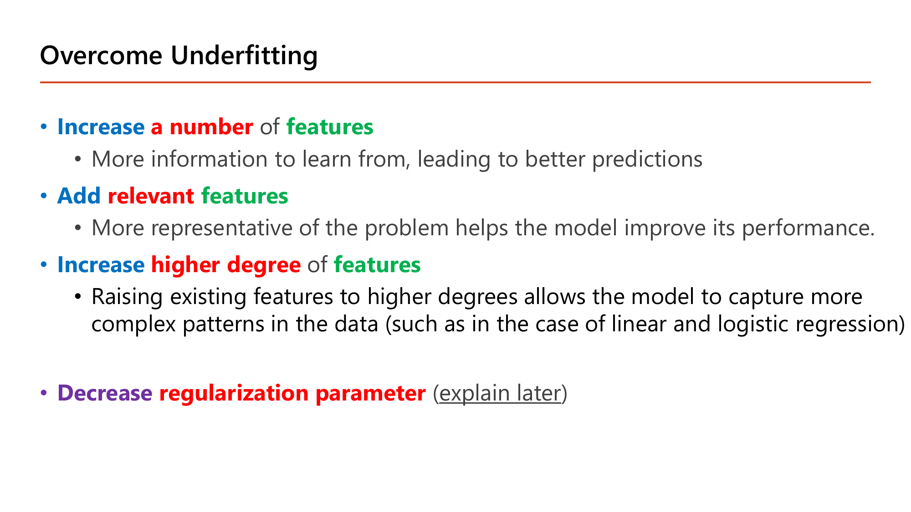
เมื่อวินิจฉัยได้ว่าเป็น high bias สไลด์ให้วิธีแก้สี่ข้อซึ่งทุกข้อมีแก่นเดียวกันคือ ทำให้โมเดลยืดหยุ่นขึ้น:
วิธีสังเกตว่าจำถูกหรือไม่: สามข้อแรกคือการ เติม (เพิ่มจำนวน, เพิ่มความเกี่ยวข้อง, เพิ่มกำลัง) และข้อสุดท้ายคือการ ผ่อน สิ่งที่กดอยู่ — ทั้งหมดเดินไปทางเดียวกันคือขยับ \(d\) ไปทางขวาบนกราฟหน้า 55. ที่ต้องระวังคือ "เพิ่มข้อมูล (more examples)" ไม่ได้ อยู่ในรายการนี้ ซึ่งหน้า 58 จะอธิบายว่าทำไม.
![Overcome Overfitting slide: reduce a number of features, select only relevant features, or decrease degree of polynomial; regularization keeps all features, each contributing a bit to predict output, but constrains or regularizes the parameters to small values, many cases towards zero but not zero; L1 or lasso and L2 or ridge regularization are named, with L2 chosen as the more widely used, adding lambda times the sum of theta squared to the cost function J(theta) = (1/m) sum (h(x) - y) squared plus (lambda/m) sum theta_j squared; a scatter of well-behaved points sits on the left and a wildly oscillating quartic fit on the right, with a note that if lambda is too large then h(x) is approximately theta0](../assets/slides/dl1-p57-overcome-overfitting-l2.png)
สไลด์ให้สองทางเลือกในการแก้ overfitting. ทางแรกคือ Reduce a number of features, select only relevant features, or decrease degree of polynomial — ตรงข้ามกับสี่ข้อของหัวข้อ 10A ทุกข้อ แต่มีต้นทุนคือ เราทิ้งข้อมูลไปเลย: ถ้าตัด feature "จำนวนห้องน้ำ" ทิ้ง ต่อให้มันช่วยได้นิดหน่อยก็จะไม่มีวันได้ใช้อีก. ทางที่สองคือ Regularization ซึ่งอาจารย์อธิบายว่า Keep all features (each contributes a bit to predict output) แต่ constrains or regularizes พารามิเตอร์ให้มีค่าเล็ก ("many cases towards zero but not zero"). สังเกตวงเล็บนั้นให้ดี — เข้าใกล้ศูนย์แต่ไม่เป็นศูนย์ คือความต่างที่ข้อสอบชอบถาม เพราะถ้าเป็นศูนย์จริงก็เท่ากับตัด feature ทิ้งซึ่งเป็นวิธีแรก.
สไลด์ระบุว่ามีสองตระกูลคือ L1 (lasso) และ L2 (ridge regularization) แล้วเลือกอธิบาย L2 เพราะ "more widely used" โดยเพิ่มเทอม \(\lambda\sum_{j=1}^{n}\theta_j^2\) เข้าไปใน cost function ได้เป็น
$$J(\theta) = \frac{1}{m}\sum_{i=1}^{m}\left(h_\theta(x^{(i)})-y^{(i)}\right)^2 + \frac{\lambda}{m}\sum_{j=1}^{n}\theta_j^2$$cost เดิม + ค่าปรับที่ยิ่ง \(\theta\) ใหญ่ยิ่งแพง — โมเดลจึง "ประหยัด" ไม่ให้ \(\theta\) พองเพื่อไล่ตาม noise
สองรายละเอียดที่ต้องสังเกตจากสูตรบนสไลด์: ผลรวมเริ่มที่ \(j=1\) ไม่ใช่ \(j=0\) แปลว่า ไม่ลงโทษ \(\theta_0\) (เพราะ \(\theta_0\) แค่เลื่อนเส้นขึ้นลง ไม่ได้ทำให้เส้นหยัก) และตัวคูณคือ \(\lambda/m\) ตามที่เขียนอยู่ในกรอบของสไลด์.
กำลังสองทำให้เครื่องหมายไม่สำคัญ: \(\theta_2=-2\) ถูกลงโทษเท่ากับ \(+2\)
ยิ่งบวกเข้า cost ⇒ ต้องลด \(\theta\) เพื่อลดค่าปรับ. ตัวที่ใหญ่ที่สุด \(\theta_1=3\) มีส่วนในค่าปรับถึง 9 จาก 13.25 (68%) จึงถูกกดแรงที่สุด ขณะที่ \(\theta_3=0.5\) มีส่วนแค่ 0.25 (1.9%) แทบไม่ถูกแตะ
ถ้า \(\alpha = 0.1\): ตัวคูณ \(1 - \frac{2(0.1)(1)}{10} = 0.98\) — ทุกรอบ \(\theta\) ถูกหดลง 2% ก่อน แล้วค่อยเดินตาม gradient ของข้อมูล (จึงมีอีกชื่อว่า weight decay)
กลไกจริงคือ "แรงสองแรงดึงกัน": เทอมข้อมูลดึง \(\theta\) ไปทางที่ทำนายแม่น ส่วนเทอมค่าปรับดึง \(\theta\) กลับเข้าหาศูนย์ตลอดเวลา. \(\theta\) จะหยุดตรงจุดที่สองแรงเท่ากัน — feature ที่ช่วยจริงจะมี \(\theta\) เหลือค่าพอสมควร ส่วน feature ที่ช่วยน้อยจะถูกหดจนเกือบศูนย์
ท้ายสไลด์เขียนไว้สั้น ๆ ว่า "if \(\lambda\) is set to be too large \(h_\theta(x) \approx \theta_0\)" — ตรวจด้วยเหตุผลได้ทันที: ถ้า \(\lambda\) ใหญ่มาก เทอมค่าปรับจะครองค่า cost ทั้งหมด วิธีลด cost ที่ง่ายที่สุดคือกด \(\theta_1,\dots,\theta_n\) ให้เข้าใกล้ 0 ทุกตัว เหลือแต่ \(\theta_0\) ⇒ \(h_\theta(x)\approx\theta_0\) คือเส้นแบนราบที่ทำนายค่าเดียวกันหมดไม่ว่าจะป้อน \(x\) อะไรเข้าไป ซึ่งก็คือ underfitting / high bias นั่นเอง. ดังนั้น \(\lambda\) จึงเป็น hyperparameter ที่ต้องหาจุดสมดุลด้วย cross-validation เหมือนการเลือก degree ในหัวข้อ 9. (Lesson 3 §7 และ Lesson 4 §6 ใช้แนวคิดเดียวกัน; Keras เรียกว่า l2(λ) ใน Lesson 5.)
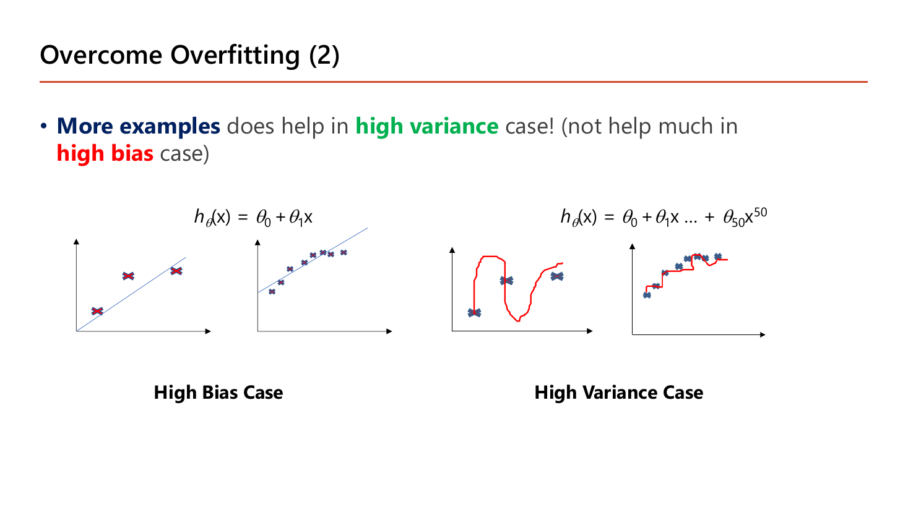
ประโยคเดียวของหน้านี้คือ More examples does help in high variance case! (not help much in high bias case) และสไลด์พิสูจน์ด้วยสองคู่ภาพที่ใช้สมการกำกับไว้ชัด. คู่ซ้ายใช้ \(h_\theta(x)=\theta_0+\theta_1x\): ตอนมีข้อมูลไม่กี่จุด เส้นตรงก็พลาดอยู่แล้ว และตอนเพิ่มข้อมูลเป็นสิบกว่าจุด เส้นตรงก็ยังพลาดเท่าเดิม — เพราะข้อจำกัดอยู่ที่ตัวสมการซึ่งโค้งไม่ได้ ไม่ใช่ที่ปริมาณข้อมูล เติมข้อมูลไปก็ไม่ช่วย. คู่ขวาใช้ \(h_\theta(x)=\theta_0+\theta_1x+\dots+\theta_{50}x^{50}\): ตอนมีข้อมูลน้อย เส้นแดงสามารถบิดตัวมุดขึ้นลงอย่างบ้าคลั่งผ่านทุกจุดได้ตามใจ เพราะระหว่างจุดว่าง ๆ ไม่มีอะไรบังคับมัน; พอเติมข้อมูลเข้าไปจนแน่น เส้นแดงถูกจุดข้อมูลบีบจากทุกทิศจนแทบกลายเป็นเส้นเรียบ — พลังพิสดารของ degree 50 ถูก "ขังไว้" ด้วยข้อมูลนั่นเอง.
สรุปเป็นหลักการที่ใช้ตัดสินใจในงานจริง: ถ้าวินิจฉัยได้ว่าเป็น high variance การลงทุนเก็บข้อมูลเพิ่มคุ้มค่า; แต่ถ้าเป็น high bias การเก็บข้อมูลเพิ่มคือการเสียเงินเปล่า ต้องไปเพิ่มความจุของโมเดลตามหัวข้อ 10A แทน. นี่คือเหตุผลที่ต้องวินิจฉัยด้วย \(J_{\text{train}}\) กับ \(J_{cv}\) ก่อนลงมือแก้เสมอ.
![Tuning Hyperparameters slide: parameter versus hyperparameter; model parameters are properties of the model that perform predictions, learned during the training process from training data and optimized to minimize training error, not provided by practitioners; model hyperparameters are external configurations governing the training process, provided by practitioners before training starts, cannot be learned from training data and are tuned for a given machine learning task iteratively; examples of hyperparameters include regularization parameter, degree of polynomial and learning rate, while coefficients and intercept are parameters; the model tuning step trains a model using a set of hyperparameters to achieve optimal performance and can be tedious and time-consuming](../assets/slides/dl1-p59-tuning-hyperparameters.png)
หน้านี้แยกคำสองคำที่ถูกใช้สลับกันจนสับสนบ่อยที่สุดในวิชา และเป็นหน้าที่อาจารย์ทำสีไว้แน่นที่สุดหน้าหนึ่ง. หัวข้อคือ Parameter vs Hyperparameter · Model parameters โดยนิยามฝั่งแรกว่า model parameters เป็น "properties of the model that perform predictions" ที่ถูก learned during the training process จาก training data และถูกปรับให้ minimize training error โดย "they are not provided by the machine learning practitioners".
ฝั่งที่สอง Model hyperparameters เป็น "external configurations that govern the ML algorithm training process" ที่ผู้ทำโมเดลเป็นคนกำหนด ก่อน เริ่มเทรน และสไลด์ย้ำว่า "they can't be learned from the training data" แต่ต้อง tuned for a given machine learning task ด้วยการลองซ้ำ ๆ แบบ iterative. สไลด์ยกตัวอย่างไว้ตรง ๆ ว่า Examples ของ model hyperparameters ได้แก่ regularization parameter (\(\lambda\) จากหัวข้อ 11), degree of polynomial (\(d\) จากหัวข้อ 10), learning rate (\(\alpha\) จากหัวข้อ 3) ฯลฯ และวงเล็บปิดท้ายว่า "(coefficients and intercept are parameters)" — คือ \(\theta_1,\dots,\theta_n\) (สัมประสิทธิ์) และ \(\theta_0\) (จุดตัดแกน) เป็น parameter.
ลองทดสอบความเข้าใจด้วยคำถามเดียว: "ถ้าลืมตั้งค่านี้ โปรแกรมจะรันได้ไหม?" — \(\alpha\) ถ้าไม่ตั้งก็เริ่มเทรนไม่ได้เลย (hyperparameter) ส่วน \(\theta_1\) ไม่ต้องตั้งเพราะเดี๋ยวโปรแกรมหาเอง (parameter). อีกวิธีคือถามว่า "gradient descent ปรับตัวนี้หรือไม่" — สูตร \(\theta_j := \theta_j - \alpha\,\partial J/\partial\theta_j\) ปรับเฉพาะ \(\theta\) ส่วน \(\alpha\) ปรากฏอยู่ในสูตรแต่ไม่เคยถูกสูตรนี้แตะเลย.
ย่อหน้าสุดท้ายของสไลด์นิยามขั้นตอน model tuning ว่าเป็นการเทรนโมเดลโดยใช้ a set of hyperparameters เพื่อให้ได้ optimal performance ตามวัตถุประสงค์ที่ตั้งไว้ในขั้นแรกของกระบวนการพัฒนา ML พร้อมเตือนตามตรงว่า "this step can be tedious, repetitive, and time-consuming as it requires experimenting with different ML algorithms or hyperparameter sets". เชื่อมกลับไปหน้า 53 ได้พอดี: ขั้นตอน "repeat step 1 for each set of hyperparameters" ของ cross validation ก็คือ model tuning ที่ว่านี้ และ Lesson 6 จะสอนวิธีทำให้มันอัตโนมัติด้วย Keras Tuner.
K-means ต้องตอบให้ได้ว่า "จุดนี้ใกล้ศูนย์กลางไหนที่สุด" จึงต้องมีวิธีวัดระยะ.
บนเส้นจำนวน (1 มิติ) ระยะทางคือผลต่างแบบไม่สนเครื่องหมาย: ระยะจาก 3 ถึง 10 คือ \(|3-10| = 7\).
บนระนาบ (2 มิติ) ใช้ทฤษฎีบทพีทาโกรัส: ระยะจาก \((1,2)\) ถึง \((4,6)\) คือ
$$\sqrt{(4-1)^2+(6-2)^2}=\sqrt{9+16}=\sqrt{25}=5$$และ "ค่าเฉลี่ยของกลุ่มจุด" (centroid) ก็คือเฉลี่ยแยกแกน: จุด \((1,2)\), \((3,4)\), \((5,0)\) มี centroid ที่ \(\left(\frac{1+3+5}{3},\frac{2+4+0}{3}\right)=(3,2)\).
![Unsupervised Learning slide: given a set of unlabeled points, discover interesting patterns; no correct answers, no target to learn, a descriptive model not trying to predict outputs; two scatter plots of X2 against X1 show the same points first all in one colour and then split into cluster1, cluster2 and cluster3; the algorithm box says randomly initialize K cluster centroids mu_1 to mu_k, then repeat — for i = 1 to m set c_i to the index of the cluster centroid closest to x_i, and for k = 1 to K set mu_k to the average of points assigned to cluster k — iterating until the cluster assignments stop changing or reach max iterations](../assets/slides/dl1-p60-kmeans-diagram.png)
หน้าสุดท้ายของ lecture กลับมาที่ฝั่งที่ไม่มีเฉลย: Given a set of unlabeled points and want to discover interesting patterns in this dataset โดยมีคำอธิบายกำกับสองบรรทัดว่า "no correct answers - no target to learn" และ "descriptive model, not trying to predict outputs". เทียบกับภาพสองอันบนสไลด์: อันซ้ายคือข้อมูล \(X_1, X_2\) ที่ยังเป็นสีเดียวกันหมด (ไม่มีป้าย) อันขวาคือข้อมูลชุดเดียวกันหลังจัดกลุ่มแล้วเป็น cluster1, cluster2, cluster3 — สังเกตว่า "สี" ในภาพขวาไม่ได้มาจากเฉลยใด ๆ แต่เป็นสิ่งที่อัลกอริทึมสร้างขึ้นเองจากการที่จุดเหล่านั้นอยู่ใกล้กัน.
อัลกอริทึมที่สไลด์เขียนเป็นซูโดโค้ดอ่านได้ดังนี้ — เริ่มจาก Randomly initialize \(K\) cluster centroids \(\mu_1,\mu_2,\mu_3,\dots,\mu_k \in \mathbb{R}^n\) แล้ววนสองขั้นตอนนี้สลับกัน:
และเงื่อนไขหยุดสองข้อที่อาจารย์ทำสีไว้ท้ายสุด: iterate until the cluster assignments stop changing หรือ reach max iterations. เงื่อนไขแรกคือการลู่เข้าจริง ส่วนเงื่อนไขที่สองเป็นตัวกันไม่ให้วนไม่รู้จบ — ข้อสอบชอบถามว่า "K-means หยุดเมื่อไร" โดยมีตัวเลือกลวงว่า "เมื่อ cost เป็นศูนย์" หรือ "เมื่อ gradient เป็นศูนย์" ซึ่งไม่ใช่ทั้งคู่ เพราะ K-means ไม่มีการใช้ gradient descent เลย.
จุด 1 → \(\mu_1\) (ระยะ 0 เทียบ 1) ; จุด 2 → \(\mu_2\) (1 เทียบ 0) ; จุด 3 → \(\mu_2\) (2 เทียบ 1) ; จุด 10, 11, 12 → \(\mu_2\) ทั้งหมด (เพราะ \(\mu_2\) อยู่ใกล้กว่า \(\mu_1\) หนึ่งหน่วยเสมอ)
\(\mu_2\) ถูกดึงไปทางขวาไกลมาก เพราะมีสมาชิกฝั่งขวาถึงสามตัว
จุด 3: ระยะถึง \(\mu_1\) = 2, ถึง \(\mu_2\) = 4.6 ⇒ ย้ายมาอยู่กับ \(\mu_1\); จุด 2 ก็เช่นกัน (1 เทียบ 5.6); จุด 10, 11, 12 ยังอยู่กับ \(\mu_2\)
จุด 1, 2, 3 ยังใกล้ 2 มากกว่า 11 และจุด 10, 11, 12 ยังใกล้ 11 มากกว่า 2 ⇒ การสังกัดเหมือนรอบที่แล้วทุกจุด ⇒ stop changing = converge
ได้ 2 กลุ่มคือ {1, 2, 3} และ {10, 11, 12} ที่ centroid = 2 และ 11 แม้เริ่มจากจุดเริ่มต้นที่แย่มาก (centroid สองตัวติดกันอยู่ฝั่งซ้ายทั้งคู่) และใช้เพียง 2 รอบ. ไม่มีขั้นตอนไหนใช้ gradient descent หรือ label เลย — มีแค่การวัดระยะกับการหาค่าเฉลี่ย. ข้อควรระวังจริง: ถ้าเริ่มด้วย centroid ที่โชคร้ายกว่านี้ (เช่นเริ่มทั้งสองตัวอยู่กลางกลุ่มขวา) K-means อาจลู่เข้าสู่การแบ่งกลุ่มที่ไม่ดี จึงมักรันซ้ำหลายครั้งด้วยการสุ่มต่างกันแล้วเลือกผลที่ดีที่สุด
ทุกสูตรในบทนี้ — cost function, gradient descent, sigmoid, softmax, regularization, bias/variance — จะกลับมาใน Lesson 2–6 แค่เปลี่ยนจาก "1 node" เป็น "หลาย node เรียงเป็น layer". ถ้าสูตร \(\theta_j := \theta_j - \alpha\,\partial J/\partial\theta_j\) และตัวอย่างคำนวณในบทนี้แม่นแล้ว บทต่อ ๆ ไปคือการใส่ subscript/superscript เพิ่มเข้าไปในสูตรเดิม ไม่ใช่การเรียนหลักการใหม่.
| สิ่งที่เรียนในบทนี้ | กลับมาเป็นอะไรในบทถัดไป |
|---|---|
| 1 node = sigmoid ของผลรวมเชิงเส้น (หัวข้อ 5) | Lesson 2: หลาย node ต่อชั้น หลายชั้นต่อกัน |
| \(\theta_j := \theta_j - \alpha\,\partial J/\partial\theta_j\) (หัวข้อ 3) | Lesson 3: backpropagation = วิธีหา \(\partial J/\partial\theta\) ของทุกชั้นอย่างมีประสิทธิภาพ |
| log loss / softmax loss (หัวข้อ 6, 8) | Lesson 3–4: binary_crossentropy และ categorical_crossentropy ใน Keras |
| learning rate และอาการ diverge (หัวข้อ 3.3) | Lesson 4: Momentum, RMSProp, Adam และ learning-rate schedule |
| z-score normalization (หัวข้อ 4) | Lesson 5: Batch Normalization ที่ทำ z-score ให้ทุก hidden layer |
| bias/variance และ regularization (หัวข้อ 10–11) | Lesson 4–6: dropout, early stopping, weight decay และการจูนด้วย tuner |
ไล่ทุกหน้าของ Lecture1.pdf ตั้งแต่ 1 ถึง 60 — หน้าที่มี ✓ ถูกสอนไว้ในหัวข้อที่ลิงก์ไว้ (คลิกเพื่อกระโดดไป) ส่วนที่เหลือคือหน้าปก หน้าอ้างอิงหนังสือ และหน้าคั่นบท ซึ่งไม่มีเนื้อหาให้สอน.
| หน้า | เนื้อหา | สถานะ |
|---|---|---|
| 1 | ปก — Introduction: Deep Learning, 2603520, Semester 1/2569 | etc — หน้าปก ไม่มีเนื้อหา |
| 2–4 | Lecturer, Course Overview, Course Overview (2) — โครงคอร์ส 5 Part, Grading Policy, Pre-requisite | ✓ หัวข้อ 0 (ขอบเขต midterm = Week 1–6) |
| 5 | Recommended Resources — รายชื่อหนังสือและคอร์สออนไลน์ | etc — หน้ารวมบรรณานุกรม ไม่มีเนื้อหาทฤษฎี |
| 6–11 | Artificial Intelligence, Machine Learning (Samuel), Deep Learning, Deep Learning Model (ANN), Deep Neural Network, AI+ML+DL Timeline | ✓ หัวข้อ 0A (มีรูป 5 หน้า) |
| 12–19 | Why DL is so Powerful (1)(2), Why DL is Popular Today, Successful Applications, ตัวอย่างงานวิจัย CV/NLP, TensorFlow Playground, Deep Learning Challenges | ✓ หัวข้อ 1 (มีรูป 5 หน้า) |
| 20–23 | Machine Learning (ทวนนิยาม), How Machines Learn, How the Model Fits Data, Common Modelling Process | ✓ หัวข้อ 1A (มีรูป 3 หน้า) |
| 24 | Types of Machine Learning — supervised/unsupervised, regression/classification | ✓ หัวข้อ 1B (มีรูป) |
| 25 | Machine Learning Algorithms — แผนผังรวมชื่ออัลกอริทึมทุกตระกูล | etc — หน้าคั่นบท (section divider) ไม่มีข้อความสอน |
| 26 | Dataset — ตารางข้อมูล, ชนิดของ feature, สัญกรณ์ x, y, m | ✓ หัวข้อ 1B (มีรูป) |
| 27–28 | Linear Regression นิยาม, Model Representation — slope จากจุด (0,0),(3,3) และตารางบ้าน 3 แถว | ✓ หัวข้อ 2 (มีรูป 2 หน้า) |
| 29–33 | Cost Function (MSE/MAE), Parameter Learning, Behind Gradient Descent, Learning Rate, Calibrating Learning Rate | ✓ หัวข้อ 3 (มีรูป 5 หน้า) |
| 34–36 | Speed up Gradient Descent, Min-Max Normalization, Mean Normalization (z-score) | ✓ หัวข้อ 4 (มีรูป 3 หน้า) |
| 37 | Why Parameter Learning — normal equation vs gradient descent | ✓ หัวข้อ 3A |
| 38–43 | Classification, Binary Classification, Logistic Regression, Model Representation (1)(2), Understand Decision Boundary | ✓ หัวข้อ 5 (มีรูป 6 หน้า) |
| 44–45 | Cost Function (Log Loss) และ Parameter Learning ของ classification | ✓ หัวข้อ 6 (มีรูป 2 หน้า) |
| 46–47 | Metrics from Confusion Matrix, ROC (Receiver Operating Characteristic) Curve | ✓ หัวข้อ 7 (มีรูป 2 หน้า) |
| 48–50 | Multiclass Classification, One versus Rest Algorithm, Multiclass Logistic Regression (Softmax) | ✓ หัวข้อ 8 (มีรูป 3 หน้า) |
| 51–53 | Model Evaluation, Cross Validation (k-fold), Example of 3-fold Cross Validation | ✓ หัวข้อ 9 (มีรูป 3 หน้า) |
| 54–55 | Model Improvement (underfit/overfit), How to debug bias or variance? | ✓ หัวข้อ 10 (มีรูป 2 หน้า) |
| 56 | Overcome Underfitting — เพิ่ม feature / degree, ลด regularization | ✓ หัวข้อ 10A (มีรูป) |
| 57–58 | Overcome Overfitting (L1/L2 Regularization), Overcome Overfitting (2) — More examples | ✓ หัวข้อ 11 (มีรูป 2 หน้า) |
| 59 | Tuning Hyperparameters — parameter vs hyperparameter, model tuning | ✓ หัวข้อ 11A (มีรูป) |
| 60 | Unsupervised Learning — K-means algorithm และเงื่อนไขหยุด | ✓ หัวข้อ 12 (มีรูป) |
สงสัยตรงไหน ถามได้เลยในแชท — ผมเป็นผู้สอนของคุณ ถามซ้ำได้ ถามลึกได้ ไม่ต้องเกรงใจ.